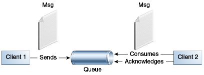
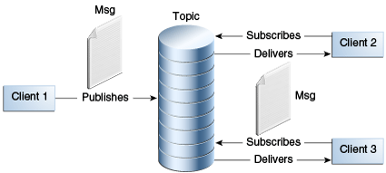
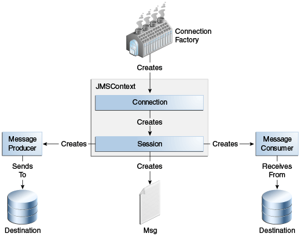
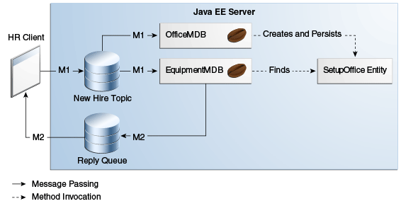

1. Jakarta Messaging Concepts
This chapter provides an introduction to Jakarta Messaging, a Java API that allows applications to create, send, receive, and read messages using reliable, asynchronous, loosely coupled communication.
1.1. Jakarta Messaging Overview
This overview defines the concept of messaging, describes Jakarta Messaging and where it can be used, and explains how Jakarta Messaging works within the Jakarta EE platform.
1.1.1. What Is Messaging?
Messaging is a method of communication between software components or applications. A messaging system is a peer-to-peer facility: A messaging client can send messages to, and receive messages from, any other client. Each client connects to a messaging agent that provides facilities for creating, sending, receiving, and reading messages.
Messaging enables distributed communication that is loosely coupled. A component sends a message to a destination, and the recipient can retrieve the message from the destination. What makes the communication loosely coupled is that the destination is all that the sender and receiver have in common. The sender and the receiver do not have to be available at the same time in order to communicate. In fact, the sender does not need to know anything about the receiver; nor does the receiver need to know anything about the sender. The sender and the receiver need to know only which message format and which destination to use. In this respect, messaging differs from tightly coupled technologies, such as Remote Method Invocation (RMI), which require an application to know a remote application’s methods.
Messaging also differs from electronic mail (email), which is a method of communication between people or between software applications and people. Messaging is used for communication between software applications or software components.
1.1.2. What Is Jakarta Messaging?
Jakarta Messaging is a Java API that allows applications to create, send, receive, and read messages. Jakarta Messaging defines a common set of interfaces and associated semantics that allow programs written in the Java programming language to communicate with other messaging implementations.
Jakarta Messaging minimizes the set of concepts a programmer must learn in order to use messaging products but provides enough features to support sophisticated messaging applications. It also strives to maximize the portability of Messaging applications across providers.
Jakarta Messaging enables communication that is not only loosely coupled but also
-
Asynchronous: A receiving client does not have to receive messages at the same time the sending client sends them. The sending client can send them and go on to other tasks; the receiving client can receive them much later.
-
Reliable: A messaging provider that implements Jakarta Messaging can ensure that a message is delivered once and only once. Lower levels of reliability are available for applications that can afford to miss messages or to receive duplicate messages.
The current version of the Jakarta Messaging specification is Version 2.0.
1.1.3. When Can You Use Jakarta Messaging?
An enterprise application provider is likely to choose a messaging API over a tightly coupled API, such as a remote procedure call (RPC), under the following circumstances.
-
The provider wants the components not to depend on information about other components' interfaces, so components can be easily replaced.
-
The provider wants the application to run whether or not all components are up and running simultaneously.
-
The application business model allows a component to send information to another and to continue to operate without receiving an immediate response.
For example, components of an enterprise application for an automobile manufacturer can use Jakarta Messaging in situations like the following.
-
The inventory component can send a message to the factory component when the inventory level for a product goes below a certain level so the factory can make more cars.
-
The factory component can send a message to the parts components so the factory can assemble the parts it needs.
-
The parts components in turn can send messages to their own inventory and order components to update their inventories and to order new parts from suppliers.
-
Both the factory and the parts components can send messages to the accounting component to update budget numbers.
-
The business can publish updated catalog items to its sales force.
Using messaging for these tasks allows the various components to interact with one another efficiently, without tying up network or other resources. Figure 48-1 illustrates how this simple example might work.

Manufacturing is only one example of how an enterprise can use the Jakarta Messaging API. Retail applications, financial services applications, health services applications, and many others can make use of messaging.
1.1.4. How Does Jakarta Messaging Work with the Jakarta EE Platform?
When JMS was first introduced, its most important purpose was to allow Java applications to access existing messaging-oriented middleware (MOM) systems. Since that time, many vendors have adopted and implemented JMS, so a Jakarta Messaging product can now provide a complete messaging capability for an enterprise.
Jakarta Messaging is an integral part of the Jakarta EE platform, and application developers can use messaging with Jakarta EE components. Jakarta Messaging 2.0 is part of the Jakarta EE 8 release.
Jakarta Messaging in the Jakarta EE platform has the following features.
-
Application clients, Jakarta Enterprise Beans components, and web components can send or synchronously receive a Jakarta Messaging message. Application clients can in addition set a message listener that allows Jakarta Messaging messages to be delivered to it asynchronously by being notified when a message is available.
-
Message-driven beans, which are a kind of enterprise bean, enable the asynchronous consumption of messages in the enterprise bean container. An application server typically pools message-driven beans to implement concurrent processing of messages.
-
Message send and receive operations can participate in Jakarta transactions, which allow Jakarta Messaging operations and database accesses to take place within a single transaction.
Jakarta Messaging enhances the other parts of the Jakarta EE platform by simplifying enterprise development, allowing loosely coupled, reliable, asynchronous interactions among Jakarta EE components and legacy systems capable of messaging. A developer can easily add new behavior to a Jakarta EE application that has existing business events by adding a new message-driven bean to operate on specific business events. The Jakarta EE platform, moreover, enhances Jakarta Messaging by providing support for Jakarta Transactions and allowing for the concurrent consumption of messages. For more information, see the Jakarta Enterprise Beans specification, v3.2.
The Jakarta Messaging provider can be integrated with the application server using the Jakarta EE Connector architecture. You access the Messaging provider through a resource adapter. This capability allows vendors to create Messaging providers that can be plugged in to multiple application servers, and it allows application servers to support multiple Messaging providers. For more information, see the Jakarta EE Connector architecture specification, v1.7.
1.2. Basic Jakarta Messaging Concepts
This section introduces the most basic Jakarta Messaging concepts, the ones you must know to get started writing simple application clients that use the Jakarta Messaging.
The next section introduces the Jakarta Messaging programming model. Later sections cover more advanced concepts, including the ones you need in order to write applications that use message-driven beans.
1.2.1. Jakarta Messaging Architecture
A Jakarta Messaging application is composed of the following parts.
-
A Jakarta Messaging provider is a messaging system that implements the Messaging interfaces and provides administrative and control features. An implementation of the Jakarta EE platform that supports the full profile includes a Messaging provider.
-
Jakarta Messaging clients are the programs or components, written in the Java programming language, that produce and consume messages. Any Jakarta EE application component can act as a Messaging client.
Java SE applications can also act as Jakarta Messaging clients; the Message Queue Developer’s Guide for Java Clients in the GlassFish Server documentation (
https://eclipse-ee4j.github.io/glassfish/documentation) explains how to make this work. -
Messages are the objects that communicate information between Jakarta Messaging clients.
-
Administered objects are Jakarta Messaging objects configured for the use of clients. The two kinds of Jakarta Messaging administered objects are destinations and connection factories, described in Jakarta Messaging Administered Objects. An administrator can create objects that are available to all applications that use a particular installation of GlassFish Server; alternatively, a developer can use annotations to create objects that are specific to a particular application.
Figure 48-2 illustrates the way these parts interact. Administrative tools or annotations allow you to bind destinations and connection factories into a JNDI namespace. A Messaging client can then use resource injection to access the administered objects in the namespace and then establish a logical connection to the same objects through the Jakarta Messaging provider.
1.2.2. Messaging Styles
Before the Jakarta Messaging existed, most messaging products supported either the point-to-point or the publish/subscribe style of messaging. The Jakarta Messaging specification defines compliance for each style. A Messaging provider must implement both styles, and the Jakarta Messaging provides interfaces that are specific to each. The following subsections describe these messaging styles.
Jakarta Messaging, however, makes it unnecessary to use only one of the two styles. It allows you to use the same code to send and receive messages using either the PTP or the pub/sub style. The destinations you use remain specific to one style, and the behavior of the application will depend in part on whether you are using a queue or a topic. However, the code itself can be common to both styles, making your applications flexible and reusable. This tutorial describes and illustrates this coding approach, using the greatly simplified API provided by Jakarta Messaging 2.0.
Point-to-Point Messaging Style
A point-to-point (PTP) product or application is built on the concept of message queues, senders, and receivers. Each message is addressed to a specific queue, and receiving clients extract messages from the queues established to hold their messages. Queues retain all messages sent to them until the messages are consumed or expire.
PTP messaging, illustrated in Figure 48-3, has the following characteristics.
-
Each message has only one consumer.
-
The receiver can fetch the message whether or not it was running when the client sent the message.

Use PTP messaging when every message you send must be processed successfully by one consumer.
Publish/Subscribe Messaging Style
In a publish/subscribe (pub/sub) product or application, clients address messages to a topic, which functions somewhat like a bulletin board. Publishers and subscribers can dynamically publish or subscribe to the topic. The system takes care of distributing the messages arriving from a topic’s multiple publishers to its multiple subscribers. Topics retain messages only as long as it takes to distribute them to subscribers.
With pub/sub messaging, it is important to distinguish between the consumer that subscribes to a topic (the subscriber) and the subscription that is created. The consumer is a Jakarta Messaging object within an application, while the subscription is an entity within the Jakarta Messaging provider. Normally, a topic can have many consumers, but a subscription has only one subscriber. It is possible, however, to create shared subscriptions; see Creating Shared Subscriptions for details. See Consuming Messages from Topics for details on the semantics of pub/sub messaging.
Pub/sub messaging has the following characteristics.
-
Each message can have multiple consumers.
-
A client that subscribes to a topic can consume only messages sent after the client has created a subscription, and the consumer must continue to be active in order for it to consume messages.
The Jakarta Messaging relaxes this requirement to some extent by allowing applications to create durable subscriptions, which receive messages sent while the consumers are not active. Durable subscriptions provide the flexibility and reliability of queues but still allow clients to send messages to many recipients. For more information about durable subscriptions, see Creating Durable Subscriptions.
Use pub/sub messaging when each message can be processed by any number of consumers (or none). Figure 48-4 illustrates pub/sub messaging.

1.2.3. Message Consumption
Messaging products are inherently asynchronous: There is no fundamental timing dependency between the production and the consumption of a message. However, the Jakarta Messaging specification uses this term in a more precise sense. Messages can be consumed in either of two ways.
-
Synchronously: A consumer explicitly fetches the message from the destination by calling the
receivemethod. Thereceivemethod can block until a message arrives or can time out if a message does not arrive within a specified time limit. -
Asynchronously: An application client or a Java SE client can register a message listener with a consumer. A message listener is similar to an event listener. Whenever a message arrives at the destination, the JMS provider delivers the message by calling the listener’s
onMessagemethod, which acts on the contents of the message. In a Jakarta EE application, a message-driven bean serves as a message listener (it too has anonMessagemethod), but a client does not need to register it with a consumer.
1.3. Jakarta Messaging Programming Model
The basic building blocks of a Jakarta Messaging application are
-
Administered objects: connection factories and destinations
-
Connections
-
Sessions
-
JMSContextobjects, which combine a connection and a session in one object -
Message producers
-
Message consumers
-
Messages
Figure 48-5 shows how all these objects fit together in a Messaging client application.

Jakarta Messaging also provides queue browsers, objects that allow an application to browse messages on a queue.
This section describes all these objects briefly and provides sample commands and code snippets that show how to create and use the objects. The last subsection briefly describes Jakarta Messaging API exception handling.
Examples that show how to combine all these objects in applications appear in Chapter 49, "Java Message Service Examples," beginning with Writing Simple Jakarta Messaging Applications. For more detail, see Jakarta Messaging documentation, part of the Jakarta EE API documentation.
1.3.1. Jakarta Messaging Administered Objects
Two parts of a Jakarta Messaging application, destinations and connection factories, are commonly maintained administratively rather than programmatically. The technology underlying these objects is likely to be very different from one implementation of Jakarta Messaging to another. Therefore, the management of these objects belongs with other administrative tasks that vary from provider to provider.
Messaging clients access administered objects through interfaces that are portable, so a client application can run with little or no change on more than one implementation of Jakarta Messaging. Ordinarily, an administrator configures administered objects in a JNDI namespace, and Messaging clients then access them by using resource injection.
With GlassFish Server, you can use the asadmin create-jms-resource
command or the Administration Console to create Jakarta Messaging administered objects
in the form of connector resources. You can also specify the resources
in a file named glassfish-resources.xml that you can bundle with an
application.
NetBeans IDE provides a wizard that allows you to create Jakarta Messaging resources for GlassFish Server. See Creating Jakarta Messaging Administered Objects for details.
The Jakarta EE platform specification allows a developer to create administered objects using annotations or deployment descriptor elements. Objects created in this way are specific to the application for which they are created. See Creating Resources for Jakarta EE Applications for details. Definitions in a deployment descriptor override those specified by annotations.
Jakarta Messaging Connection Factories
A connection factory is the object a client uses to create a connection
to a provider. A connection factory encapsulates a set of connection
configuration parameters that has been defined by an administrator. Each
connection factory is an instance of the ConnectionFactory,
QueueConnectionFactory, or TopicConnectionFactory interface. To
learn how to create connection factories, see
Creating Jakarta Messaging Administered Objects.
At the beginning of a Messaging client program, you usually inject a
connection factory resource into a ConnectionFactory object. A Jakarta EE
server must provide a Jakarta Messaging connection factory with the logical JNDI name
java:comp/DefaultJMSConnectionFactory. The actual JNDI name will be
implementation-specific.
For example, the following code fragment looks up the default Jakarta Messaging
connection factory and assigns it to a ConnectionFactory object:
@Resource(lookup = "java:comp/DefaultJMSConnectionFactory")
private static ConnectionFactory connectionFactory;Jakarta Messaging Destinations
A destination is the object a client uses to specify the target of messages it produces and the source of messages it consumes. In the PTP messaging style, destinations are called queues. In the pub/sub messaging style, destinations are called topics. A Jakarta Messaging application can use multiple queues or topics (or both). To learn how to create destination resources, see Creating Jakarta Messaging Administered Objects.
To create a destination using GlassFish Server, you create a Jakarta Messaging destination resource that specifies a JNDI name for the destination.
In the GlassFish Server implementation of Jakarta Messaging, each destination resource refers to a physical destination. You can create a physical destination explicitly, but if you do not, the Application Server creates it when it is needed and deletes it when you delete the destination resource.
In addition to injecting a connection factory resource into a client
program, you usually inject a destination resource. Unlike connection
factories, destinations are specific to either the PTP or pub/sub
messaging style. To create an application that allows you to use the
same code for both topics and queues, you assign the destination to a
Destination object.
The following code specifies two resources, a queue and a topic. The resource names are mapped to destination resources created in the JNDI namespace:
@Resource(lookup = "jms/MyQueue")
private static Queue queue;
@Resource(lookup = "jms/MyTopic")
private static Topic topic;In a Jakarta EE application, Jakarta Messaging administered objects are normally placed
in the jms naming subcontext.
With the common interfaces, you can mix or match connection factories
and destinations. That is, in addition to using the ConnectionFactory
interface, you can inject a QueueConnectionFactory resource and use it
with a Topic, and you can inject a TopicConnectionFactory resource
and use it with a Queue. The behavior of the application will depend
on the kind of destination you use and not on the kind of connection
factory you use.
1.3.2. Connections
A connection encapsulates a virtual connection with a Messaging provider. For example, a connection could represent an open TCP/IP socket between a client and a provider service daemon. You use a connection to create one or more sessions.
Note: In the Jakarta EE platform, the ability to create multiple sessions from a single connection is limited to application clients. In web and enterprise bean components, a connection can create no more than one session. |
You normally create a connection by creating a JMSContext object. See
JMSContext Objects for details.
1.3.3. Sessions
A session is a single-threaded context for producing and consuming messages.
You normally create a session (as well as a connection) by creating a
JMSContext object. See JMSContext Objects for details.
You use sessions to create message producers, message consumers,
messages, queue browsers, and temporary destinations.
Sessions serialize the execution of message listeners; for details, see Jakarta Messaging Message Listeners.
A session provides a transactional context with which to group a set of sends and receives into an atomic unit of work. For details, see Using Jakarta Messaging Local Transactions.
1.3.4. JMSContext Objects
A JMSContext object combines a connection and a session in a single
object. That is, it provides both an active connection to a Messaging provider
and a single-threaded context for sending and receiving messages.
You use the JMSContext to create the following objects:
-
Message producers
-
Message consumers
-
Messages
-
Queue browsers
-
Temporary queues and topics (see Creating Temporary Destinations)
You can create a JMSContext in a try-with-resources block.
To create a JMSContext, call the createContext method on the
connection factory:
JMSContext context = connectionFactory.createContext();When called with no arguments from an application client or a Java SE
client, or from the Jakarta EE web or EJB container when there is no active
JTA transaction in progress, the createContext method creates a
non-transacted session with an acknowledgment mode of
JMSContext.AUTO_ACKNOWLEDGE. When called with no arguments from the
web or EJB container when there is an active JTA transaction in
progress, the createContext method creates a transacted session. For
information about the way Jakarta Messaging transactions work in Jakarta EE applications,
see Using Jakarta Messaging in Jakarta EE
Applications.
From an application client or a Java SE client, you can also call the
createContext method with the argument JMSContext.SESSION_TRANSACTED
to create a transacted session:
JMSContext context =
connectionFactory.createContext(JMSContext.SESSION_TRANSACTED);The session uses local transactions; see Using Jakarta Messaging Local Transactions for details.
Alternatively, you can specify a non-default acknowledgment mode; see Controlling Message Acknowledgment for more information.
When you use a JMSContext, message delivery normally begins as soon as
you create a consumer. See Jakarta Messaging Message Consumers for more
information.
If you create a JMSContext in a try-with-resources block, you do not
need to close it explicitly. It will be closed when the try block
comes to an end. Make sure that your application completes all its Jakarta Messaging
activity within the try-with-resources block. If you do not use a
try-with-resources block, you must call the close method on the
JMSContext to close the connection when the application has finished
its work.
1.3.5. Jakarta Messaging Message Producers
A message producer is an object that is created by a JMSContext or a
session and used for sending messages to a destination. A message
producer created by a JMSContext implements the JMSProducer
interface. You could create it this way:
try (JMSContext context = connectionFactory.createContext();) {
JMSProducer producer = context.createProducer();
...However, a JMSProducer is a lightweight object that does not consume
significant resources. For this reason, you do not need to save the
JMSProducer in a variable; you can create a new one each time you send
a message. You send messages to a specific destination by using the
send method. For example:
context.createProducer().send(dest, message);You can create the message in a variable before sending it, as shown
here, or you can create it within the send call. See JMS
Messages for more information.
1.3.6. Jakarta Messaging Message Consumers
A message consumer is an object that is created by a JMSContext or a
session and used for receiving messages sent to a destination. A message
producer created by a JMSContext implements the JMSConsumer
interface. The simplest way to create a message consumer is to use the
JMSContext.createConsumer method:
try (JMSContext context = connectionFactory.createContext();) {
JMSConsumer consumer = context.createConsumer(dest);
...A message consumer allows a Messaging client to register interest in a destination with a Messaging provider. The Jakarta Messaging provider manages the delivery of messages from a destination to the registered consumers of the destination.
When you use a JMSContext to create a message consumer, message
delivery begins as soon as you have created the consumer. You can
disable this behavior by calling setAutoStart(false) when you create
the JMSContext and then calling the start method explicitly to start
message delivery. If you want to stop message delivery temporarily
without closing the connection, you can call the stop method; to
restart message delivery, call start.
You use the receive method to consume a message synchronously. You can
use this method at any time after you create the consumer.
If you specify no arguments or an argument of 0, the method blocks
indefinitely until a message arrives:
Message m = consumer.receive();
Message m = consumer.receive(0);For a simple client, this may not matter. But if it is possible that a
message might not be available, use a synchronous receive with a
timeout: Call the receive method with a timeout argument greater than
0. One second is a recommended timeout value:
Message m = consumer.receive(1000); // time out after a secondTo enable asynchronous message delivery from an application client or a Java SE client, you use a message listener, as described in the next section.
You can use the JMSContext.createDurableConsumer method to create a
durable topic subscription. This method is valid only if you are using a
topic. For details, see Creating Durable Subscriptions. For
topics, you can also create shared consumers; see
Creating Shared Subscriptions.
Jakarta Messaging Message Listeners
A message listener is an object that acts as an asynchronous event
handler for messages. This object implements the MessageListener
interface, which contains one method, onMessage. In the onMessage
method, you define the actions to be taken when a message arrives.
From an application client or a Java SE client, you register the message
listener with a specific message consumer by using the
setMessageListener method. For example, if you define a class named
Listener that implements the MessageListener interface, you can
register the message listener as follows:
Listener myListener = new Listener();
consumer.setMessageListener(myListener);When message delivery begins, the Messaging provider automatically calls the
message listener’s onMessage method whenever a message is delivered.
The onMessage method takes one argument of type Message, which your
implementation of the method can cast to another message subtype as
needed (see Message Bodies).
In the Jakarta EE web or EJB container, you use message-driven beans for
asynchronous message delivery. A message-driven bean also implements the
MessageListener interface and contains an onMessage method. For
details, see Using Message-Driven Beans
to Receive Messages Asynchronously.
Your onMessage method should handle all exceptions. Throwing a
RuntimeException is considered a programming error.
For a simple example of the use of a message listener, see Using a Message Listener for Asynchronous Message Delivery. Chapter 49, "Java Message Service Examples," contains several more examples of message listeners and message-driven beans.
Jakarta Messaging Message Selectors
If your messaging application needs to filter the messages it receives, you can use a Jakarta Messaging message selector, which allows a message consumer for a destination to specify the messages that interest it. Message selectors assign the work of filtering messages to the Messaging provider rather than to the application. For an example of an application that uses a message selector, see Sending Messages from a Session Bean to an MDB.
A message selector is a String that contains an expression. The syntax
of the expression is based on a subset of the SQL92 conditional
expression syntax. The message selector in the example selects any
message that has a NewsType property that is set to the value
'Sports' or 'Opinion':
NewsType = 'Sports' OR NewsType = 'Opinion'The createConsumer and createDurableConsumer methods, as well as the
methods for creating shared consumers, allow you to specify a message
selector as an argument when you create a message consumer.
The message consumer then receives only messages whose headers and properties match the selector. (See Message Headers and Message Properties.) A message selector cannot select messages on the basis of the content of the message body.
Consuming Messages from Topics
The semantics of consuming messages from topics are more complex than the semantics of consuming messages from queues.
An application consumes messages from a topic by creating a subscription on that topic and creating a consumer on that subscription. Subscriptions may be durable or nondurable, and they may be shared or unshared.
A subscription may be thought of as an entity within the Messaging provider itself, whereas a consumer is a Jakarta Messaging object within the application.
A subscription will receive a copy of every message that is sent to the topic after the subscription is created, unless a message selector is specified. If a message selector is specified, only those messages whose properties match the message selector will be added to the subscription.
Unshared subscriptions are restricted to a single consumer. In this case, all the messages in the subscription are delivered to that consumer. Shared subscriptions allow multiple consumers. In this case, each message in the subscription is delivered to only one consumer. Jakarta Messaging does not define how messages are distributed between multiple consumers on the same subscription.
Subscriptions may be durable or nondurable.
A nondurable subscription exists only as long as there is an active consumer on the subscription. This means that any messages sent to the topic will be added to the subscription only while a consumer exists and is not closed.
A nondurable subscription may be either unshared or shared.
-
An unshared nondurable subscription does not have a name and may have only a single consumer object associated with it. It is created automatically when the consumer object is created. It is not persisted and is deleted automatically when the consumer object is closed.
The
JMSContext.createConsumermethod creates a consumer on an unshared nondurable subscription if a topic is specified as the destination. -
A shared nondurable subscription is identified by name and an optional client identifier, and may have several consumer objects consuming messages from it. It is created automatically when the first consumer object is created. It is not persisted and is deleted automatically when the last consumer object is closed. See Creating Shared Subscriptions for more information.
At the cost of higher overhead, a subscription may be durable. A durable subscription is persisted and continues to accumulate messages until explicitly deleted, even if there are no consumer objects consuming messages from it. See Creating Durable Subscriptions for details.
Creating Durable Subscriptions
To ensure that a pub/sub application receives all sent messages, use durable subscriptions for the consumers on the topic.
Like a nondurable subscription, a durable subscription may be either unshared or shared.
-
An unshared durable subscription is identified by name and client identifier (which must be set) and may have only a single consumer object associated with it.
-
A shared durable subscription is identified by name and an optional client identifier, and may have several consumer objects consuming messages from it.
A durable subscription that exists but that does not currently have a non-closed consumer object associated with it is described as being inactive.
You can use the JMSContext.createDurableConsumer method to create a
consumer on an unshared durable subscription. An unshared durable
subscription can have only one active consumer at a time.
A consumer identifies the durable subscription from which it consumes messages by specifying a unique identity that is retained by the Messaging provider. Subsequent consumer objects that have the same identity resume the subscription in the state in which it was left by the preceding consumer. If a durable subscription has no active consumer, the Messaging provider retains the subscription’s messages until they are received by the subscription or until they expire.
You establish the unique identity of an unshared durable subscription by setting the following:
-
A client ID for the connection
-
A topic and a subscription name for the subscription
You can set the client ID administratively for a client-specific
connection factory using either the command line or the Administration
Console. (In an application client or a Java SE client, you can instead
call JMSContext.setClientID.)
After using this connection factory to create the JMSContext, you call
the createDurableConsumer method with two arguments: the topic and a
string that specifies the name of the subscription:
String subName = "MySub";
JMSConsumer consumer = context.createDurableConsumer(myTopic, subName);The subscription becomes active after you create the consumer. Later, you might close the consumer:
consumer.close();The Messaging provider stores the messages sent to the topic, as it would
store messages sent to a queue. If the program or another application
calls createDurableConsumer using the same connection factory and its
client ID, the same topic, and the same subscription name, then the
subscription is reactivated and the Messaging provider delivers the messages
that were sent while the subscription was inactive.
To delete a durable subscription, first close the consumer, then call
the unsubscribe method with the subscription name as the argument:
consumer.close();
context.unsubscribe(subName);The unsubscribe method deletes the state the provider maintains for
the subscription.
Figure 48-7 show the
difference between a nondurable and a durable subscription. With an
ordinary, nondurable subscription, the consumer and the subscription
begin and end at the same point and are, in effect, identical. When the
consumer is closed, the subscription also ends. Here, create stands
for a call to JMSContext.createConsumer with a Topic argument, and
close stands for a call to JMSConsumer.close. Any messages sent to
the topic between the time of the first close and the time of the
second create are not added to either subscription. In
Figure 48-6, the consumers receive messages M1, M2, M5, and
M6, but they do not receive messages M3 and M4.

With a durable subscription, the consumer can be closed and re-created,
but the subscription continues to exist and to hold messages until the
application calls the unsubscribe method. In Figure 48-7,
create stands for a call to JMSContext.createDurableConsumer,
close stands for a call to JMSConsumer.close, and unsubscribe
stands for a call to JMSContext.unsubscribe. Messages sent after the
first consumer is closed are received when the second consumer is
created (on the same durable subscription), so even though messages M2,
M4, and M5 arrive while there is no consumer, they are not lost.

A shared durable subscription allows you to use multiple consumers to
receive messages from a durable subscription. If you use a shared
durable subscription, the connection factory you use does not need to
have a client identifier. To create a shared durable subscription, call
the JMSContext.createSharedDurableConsumer method, specifying the
topic and subscription name:
JMSConsumer consumer =
context.createSharedDurableConsumer(topic, "MakeItLast");See Acknowledging Messages, Using Durable Subscriptions, Using Shared Durable Subscriptions, and Sending Messages from a Session Bean to an MDB for examples of Jakarta EE applications that use durable subscriptions.
Creating Shared Subscriptions
A topic subscription created by the createConsumer or
createDurableConsumer method can have only one consumer (although a
topic can have many). Multiple clients consuming from the same topic
have, by definition, multiple subscriptions to the topic, and all the
clients receive all the messages sent to the topic (unless they filter
them with message selectors).
It is, however, possible to create a nondurable shared subscription to a
topic by using the createSharedConsumer method and specifying not only
a destination but a subscription name:
consumer = context.createSharedConsumer(topicName, "SubName");With a shared subscription, messages will be distributed among multiple clients that use the same topic and subscription name. Each message sent to the topic will be added to every subscription (subject to any message selectors), but each message added to a subscription will be delivered to only one of the consumers on that subscription, so it will be received by only one of the clients. A shared subscription can be useful if you want to share the message load among several consumers on the subscription rather than having just one consumer on the subscription receive each message. This feature can improve the scalability of Java EE application client applications and Java SE applications. (Message-driven beans share the work of processing messages from a topic among multiple threads.)
See Using Shared Nondurable Subscriptions for a simple example of using shared nondurable consumers.
You can also create shared durable subscriptions by using the
JMSContext.createSharedDurableConsumer method. For details, see
Creating Durable Subscriptions.
1.3.7. Jakarta Messaging Messages
The ultimate purpose of a Jakarta Messaging application is to produce and consume messages that can then be used by other software applications. Jakarta Messaging messages have a basic format that is simple but highly flexible, allowing you to create messages that match formats used by non-Jakarta Messaging applications on heterogeneous platforms.
A Jakarta Messaging message can have three parts: a header, properties, and a body. Only the header is required. The following sections describe these parts.
For complete documentation of message headers, properties, and bodies,
see the documentation of the Message interface in the API
documentation. For a list of possible message types, see
Message Bodies.
Message Headers
A Jakarta Messaging message header contains a number of predefined fields that contain
values used by both clients and providers to identify and route
messages. Table 48-1 lists and describes the Jakarta Messaging message
header fields and indicates how their values are set. For example, every
message has a unique identifier, which is represented in the header
field JMSMessageID. The value of another header field,
JMSDestination, represents the queue or the topic to which the message
is sent. Other fields include a timestamp and a priority level.
Each header field has associated setter and getter methods, which are
documented in the description of the Message interface. Some header
fields are intended to be set by a client, but many are set
automatically by the send method, which overrides any client-set
values.
Table 48-1 How Jakarta Messaging Message Header Field Values Are Set
Header Field |
Description |
Set By |
|
Destination to which the message is being sent |
JMS
provider |
|
Delivery mode specified when the message was sent (see Specifying Message Persistence) |
Messaging provider |
|
The time the message was sent plus the delivery delay specified when the message was sent (see Specifying a Delivery Delay |
JMS
provider |
|
Expiration time of the message (see Allowing Messages to Expire) |
JMS
provider |
|
The priority of the message (see Setting Message Priority Levels) |
Jakarta Messaging
provider |
|
Value that uniquely identifies each message sent by a provider |
Messaging provider |
|
The time the message was handed off to a provider to be sent |
Messaging provider |
|
Value that links one message to another; commonly
the |
Client application |
|
Destination where replies to the message should be sent |
Client application |
|
Type identifier supplied by client application |
Client application |
|
Whether the message is being redelivered |
Jakarta Messaging provider prior to delivery |
Message Properties
You can create and set properties for messages if you need values in addition to those provided by the header fields. You can use properties to provide compatibility with other messaging systems, or you can use them to create message selectors (see Jakarta Messaging Message Selectors). For an example of setting a property to be used as a message selector, see Sending Messages from a Session Bean to an MDB.
Jakarta Messaging provides some predefined property names that begin with
JMSX. A Messaging provider is required to implement only one of these,
JMSXDeliveryCount (which specifies the number of times a message has
been delivered); the rest are optional. The use of these predefined
properties or of user-defined properties in applications is optional.
Message Bodies
Jakarta Messaging defines six different types of messages. Each message type corresponds to a different message body. These message types allow you to send and receive data in many different forms. Table 48-2 describes these message types.
Table 48-2 Jakarta Messaging Message Types
Message Type |
Body Contains |
|
A |
|
A set of name-value pairs, with names as |
|
A stream of uninterpreted bytes. This message type is for literally encoding a body to match an existing message format. |
|
A stream of primitive values in the Java programming language, filled and read sequentially. |
|
A |
|
Nothing. Composed of header fields and properties only. This message type is useful when a message body is not required. |
Jakarta Messaging provides methods for creating messages of each type and for
filling in their contents. For example, to create and send a
TextMessage, you might use the following statements:
TextMessage message = context.createTextMessage();
message.setText(msg_text); // msg_text is a String
context.createProducer().send(message);At the consuming end, a message arrives as a generic Message object.
You can then cast the object to the appropriate message type and use
more specific methods to access the body and extract the message
contents (and its headers and properties if needed). For example, you
might use the stream-oriented read methods of BytesMessage. You must
always cast to the appropriate message type to retrieve the body of a
StreamMessage.
Instead of casting the message to a message type, you can call the
getBody method on the Message, specifying the type of the message as
an argument. For example, you can retrieve a TextMessage as a
String. The following code fragment uses the getBody method:
Message m = consumer.receive();
if (m instanceof TextMessage) {
String message = m.getBody(String.class);
System.out.println("Reading message: " + message);
} else {
// Handle error or process another message type
}Jakarta Messaging provides shortcuts for creating and receiving a
TextMessage, BytesMessage, MapMessage, or ObjectMessage. For
example, you do not have to wrap a string in a TextMessage; instead,
you can send and receive the string directly. For example, you can send
a string as follows:
String message = "This is a message";
context.createProducer().send(dest, message);You can receive the message by using the receiveBody method:
String message = receiver.receiveBody(String.class);You can use the receiveBody method to receive any type of message
except StreamMessage and Message, as long as the body of the message
can be assigned to a particular type.
An empty Message can be useful if you want to send a message that is
simply a signal to the application. Some of the examples in
Chapter 49, "Jakarta Messaging
Examples," send an empty message after sending a series of text
messages. For example:
context.createProducer().send(dest, context.createMessage());The consumer code can then interpret a non-text message as a signal that all the messages sent have now been received.
The examples in Chapter 49, "Jakarta Messaging
Examples," use messages of type TextMessage, MapMessage,
and Message.
1.3.8. Jakarta Messaging Queue Browsers
Messages sent to a queue remain in the queue until the message consumer
for that queue consumes them. Jakarta Messaging provides a QueueBrowser
object that allows you to browse the messages in the queue and display
the header values for each message. To create a QueueBrowser object,
use the JMSContext.createBrowser method. For example:
QueueBrowser browser = context.createBrowser(queue);See Browsing Messages on a Queue for an
example of using a QueueBrowser object.
The createBrowser method allows you to specify a message selector as a
second argument when you create a QueueBrowser. For information on
message selectors, see Jakarta Messaging Message Selectors.
Jakarta Messaging provides no mechanism for browsing a topic. Messages usually disappear from a topic as soon as they appear: If there are no message consumers to consume them, the Messaging provider removes them. Although durable subscriptions allow messages to remain on a topic while the message consumer is not active, Jakarta Messaging does not define any facility for examining them.
1.3.9. Jakarta Messaging Exception Handling
The root class for all checked exceptions in Jakarta Messaging is
JMSException. The root cause for all unchecked exceptions in the Jakarta Messaging
API is JMSRuntimeException.
Catching JMSException and JMSRuntimeException provides a generic way
of handling all exceptions related to Jakarta Messaging.
The JMSException and JMSRuntimeException classes include the
following subclasses, described in the API documentation:
-
IllegalStateException,IllegalStateRuntimeException -
InvalidClientIDException,InvalidClientIDRuntimeException -
InvalidDestinationException,InvalidDestinationRuntimeException -
InvalidSelectorException,InvalidSelectorRuntimeException -
JMSSecurityException,JMSSecurityRuntimeException -
MessageEOFException -
MessageFormatException,MessageFormatRuntimeException -
MessageNotReadableException -
MessageNotWriteableException,MessageNotWriteableRuntimeException -
ResourceAllocationException,ResourceAllocationRuntimeException -
TransactionInProgressException,TransactionInProgressRuntimeException -
TransactionRolledBackException,TransactionRolledBackRuntimeException
All the examples in the tutorial catch and handle JMSException or
JMSRuntimeException when it is appropriate to do so.
1.4. Using Advanced Jakarta Messaging Features
This section explains how to use features of Jakarta Messaging to achieve the level of reliability and performance your application requires. Many people use Jakarta Messaging in their applications because they cannot tolerate dropped or duplicate messages and because they require that every message be received once and only once. Jakarta Messaging provides this functionality.
The most reliable way to produce a message is to send a PERSISTENT
message, and to do so within a transaction.
Jakarta Messaging messages are PERSISTENT by default; PERSISTENT messages will not
be lost in the event of Messaging provider failure. For details, see
Specifying Message Persistence.
Transactions allow multiple messages to be sent or received in an atomic operation. In the Jakarta EE platform they also allow message sends and receives to be combined with database reads and writes in an atomic transaction. A transaction is a unit of work into which you can group a series of operations, such as message sends and receives, so that the operations either all succeed or all fail. For details, see Using Jakarta Messaging Local Transactions.
The most reliable way to consume a message is to do so within a transaction, either from a queue or from a durable subscription to a topic. For details, see Creating Durable Subscriptions, Creating Temporary Destinations, and Using Jakarta Messaging Local Transactions.
Some features primarily allow an application to improve performance. For example, you can set messages to expire after a certain length of time (see Allowing Messages to Expire), so that consumers do not receive unnecessary outdated information. You can send messages asynchronously; see Sending Messages Asynchronously.
You can also specify various levels of control over message acknowledgment; see Controlling Message Acknowledgment.
Other features can provide useful capabilities unrelated to reliability. For example, you can create temporary destinations that last only for the duration of the connection in which they are created. See Creating Temporary Destinations for details.
The following sections describe these features as they apply to application clients or Java SE clients. Some of the features work differently in the Jakarta EE web or enterprise bean container; in these cases, the differences are noted here and are explained in detail in Using Jakarta Messaging in Jakarta EE Applications.
1.4.1. Controlling Message Acknowledgment
Until a Jakarta Messaging message has been acknowledged, it is not considered to be successfully consumed. The successful consumption of a message ordinarily takes place in three stages.
-
The client receives the message.
-
The client processes the message.
-
The message is acknowledged. Acknowledgment is initiated either by the Messaging provider or by the client, depending on the session acknowledgment mode.
In locally transacted sessions (see Using Jakarta Messaging Local Transactions), a message is acknowledged when the session is committed. If a transaction is rolled back, all consumed messages are redelivered.
In a Jakarta transaction (in the Jakarta EE web or enterprise bean container) a message is acknowledged when the transaction is committed.
In nontransacted sessions, when and how a message is acknowledged depend
on a value that may be specified as an argument of the createContext
method. The possible argument values are as follows.
-
JMSContext.AUTO_ACKNOWLEDGE: This setting is the default for application clients and Java SE clients. TheJMSContextautomatically acknowledges a client’s receipt of a message either when the client has successfully returned from a call toreceiveor when theMessageListenerit has called to process the message returns successfully.A synchronous receive in a
JMSContextthat is configured to use auto-acknowledgment is the one exception to the rule that message consumption is a three-stage process as described earlier. In this case, the receipt and acknowledgment take place in one step, followed by the processing of the message. -
JMSContext.CLIENT_ACKNOWLEDGE: A client acknowledges a message by calling the message’sacknowledgemethod. In this mode, acknowledgment takes place on the session level: Acknowledging a consumed message automatically acknowledges the receipt of all messages that have been consumed by its session. For example, if a message consumer consumes ten messages and then acknowledges the fifth message delivered, all ten messages are acknowledged.Note:
In the Jakarta EE platform, the
JMSContext.CLIENT_ACKNOWLEDGEsetting can be used only in an application client, not in a web component or enterprise bean. -
JMSContext.DUPS_OK_ACKNOWLEDGE: This option instructs theJMSContextto lazily acknowledge the delivery of messages. This is likely to result in the delivery of some duplicate messages if the Messaging provider fails, so it should be used only by consumers that can tolerate duplicate messages. (If the Messaging provider redelivers a message, it must set the value of theJMSRedeliveredmessage header totrue.) This option can reduce session overhead by minimizing the work the session does to prevent duplicates.
If messages have been received from a queue but not acknowledged when a
JMSContext is closed, the Messaging provider retains them and redelivers
them when a consumer next accesses the queue. The provider also retains
unacknowledged messages if an application closes a JMSContext that has
been consuming messages from a durable subscription. (See
Creating Durable Subscriptions.)
Unacknowledged messages that have been received from a nondurable
subscription will be dropped when the JMSContext is closed.
If you use a queue or a durable subscription, you can use the
JMSContext.recover method to stop a nontransacted JMSContext and
restart it with its first unacknowledged message. In effect, the
JMSContext’s series of delivered messages is reset to the point after
its last acknowledged message. The messages it now delivers may be
different from those that were originally delivered, if messages have
expired or if higher-priority messages have arrived. For a consumer on a
nondurable subscription, the provider may drop unacknowledged messages
when the `JMSContext.recover method is called.
The sample program in Acknowledging Messages demonstrates two ways to ensure that a message will not be acknowledged until processing of the message is complete.
1.4.2. Specifying Options for Sending Messages
You can set a number of options when you send a message. These options enable you to perform the tasks described in the following topics:
-
Specifying Message Persistence Specify that messages are persistent, meaning they must not be lost in the event of a provider failure.
-
Setting Message Priority Levels Set priority levels for messages, which can affect the order in which the messages are delivered.
-
Allowing Messages to Expire Specify an expiration time for messages so they will not be delivered if they are obsolete.
-
Specifying a Delivery Delay Specify a delivery delay for messages so that they will not be delivered until a specified amount of time has expired.
-
Using JMSProducer Method Chaining Method chaining allows you to specify more than one of these options when you create a producer and call the
sendmethod.
Specifying Message Persistence
Jakarta Messaging supports two delivery modes specifying whether messages are
lost if the Messaging provider fails. These delivery modes are fields of the
DeliveryMode interface.
-
The default delivery mode,
PERSISTENT, instructs the Messaging provider to take extra care to ensure that a message is not lost in transit in case of a Messaging provider failure. A message sent with this delivery mode is logged to stable storage when it is sent. -
The
NON_PERSISTENTdelivery mode does not require the Messaging provider to store the message or otherwise guarantee that it is not lost if the provider fails.
To specify the delivery mode, use the setDeliveryMode method of the
JMSProducer interface to set the delivery mode for all messages sent
by that producer.
You can use method chaining to set the delivery mode when you create a
producer and send a message. The following call creates a producer with
a NON_PERSISTENT delivery mode and uses it to send a message:
context.createProducer()
.setDeliveryMode(DeliveryMode.NON_PERSISTENT).send(dest, msg);If you do not specify a delivery mode, the default is PERSISTENT.
Using the NON_PERSISTENT delivery mode may improve performance and
reduce storage overhead, but you should use it only if your application
can afford to miss messages.
Setting Message Priority Levels
You can use message priority levels to instruct the Messaging provider to
deliver urgent messages first. Use the setPriority method of the
JMSProducer interface to set the priority level for all messages sent
by that producer.
You can use method chaining to set the priority level when you create a producer and send a message. For example, the following call sets a priority level of 7 for a producer and then sends a message:
context.createProducer().setPriority(7).send(dest, msg);The ten levels of priority range from 0 (lowest) to 9 (highest). If you do not specify a priority level, the default level is 4. A Messaging provider tries to deliver higher-priority messages before lower-priority ones, but does not have to deliver messages in exact order of priority.
Allowing Messages to Expire
By default, a message never expires. If a message will become obsolete
after a certain period, however, you may want to set an expiration time.
Use the setTimeToLive method of the JMSProducer interface to set a
default expiration time for all messages sent by that producer.
For example, a message that contains rapidly changing data such as a stock price will become obsolete after a few minutes, so you might configure messages to expire after that time.
You can use method chaining to set the time to live when you create a producer and send a message. For example, the following call sets a time to live of five minutes for a producer and then sends a message:
context.createProducer().setTimeToLive(300000).send(dest, msg);If the specified timeToLive value is 0, the message never expires.
When the message is sent, the specified timeToLive is added to the
current time to give the expiration time. Any message not delivered
before the specified expiration time is destroyed. The destruction of
obsolete messages conserves storage and computing resources.
Specifying a Delivery Delay
You can specify a length of time that must elapse after a message is
sent before the Messaging provider delivers the message. Use the
setDeliveryDelay method of the JMSProducer interface to set a
delivery delay for all messages sent by that producer.
You can use method chaining to set the delivery delay when you create a producer and send a message. For example, the following call sets a delivery delay of 3 seconds for a producer and then sends a message:
context.createProducer().setDeliveryDelay(3000).send(dest, msg);Using JMSProducer Method Chaining
The setter methods on the JMSProducer interface return JMSProducer
objects, so you can use method chaining to create a producer, set
multiple properties, and send a message. For example, the following
chained method calls create a producer, set a user-defined property, set
the expiration, delivery mode, and priority for the message, and then
send a message to a queue:
context.createProducer()
.setProperty("MyProperty", "MyValue")
.setTimeToLive(10000)
.setDeliveryMode(NON_PERSISTENT)
.setPriority(2)
.send(queue, body);You can also call the JMSProducer methods to set properties on a
message and then send the message in a separate send method call. You
can also set message properties directly on a message.
1.4.3. Creating Temporary Destinations
Normally, you create JMS destinations (queues and topics) administratively rather than programmatically. Your Messaging provider includes a tool to create and remove destinations, and it is common for destinations to be long-lasting.
Jakarta Messaging also enables you to create destinations (TemporaryQueue
and TemporaryTopic objects) that last only for the duration of the
connection in which they are created. You create these destinations
dynamically using the JMSContext.createTemporaryQueue and the
JMSContext.createTemporaryTopic methods, as in the following example:
TemporaryTopic replyTopic = context.createTemporaryTopic();The only message consumers that can consume from a temporary destination are those created by the same connection that created the destination. Any message producer can send to the temporary destination. If you close the connection to which a temporary destination belongs, the destination is closed and its contents are lost.
You can use temporary destinations to implement a simple request/reply
mechanism. If you create a temporary destination and specify it as the
value of the JMSReplyTo message header field when you send a message,
then the consumer of the message can use the value of the JMSReplyTo
field as the destination to which it sends a reply. The consumer can
also reference the original request by setting the JMSCorrelationID
header field of the reply message to the value of the JMSMessageID
header field of the request. For example, an onMessage method can
create a JMSContext so that it can send a reply to the message it
receives. It can use code such as the following:
replyMsg = context.createTextMessage("Consumer processed message: "
+ msg.getText());
replyMsg.setJMSCorrelationID(msg.getJMSMessageID());
context.createProducer().send((Topic) msg.getJMSReplyTo(), replyMsg);For an example, see Using an Entity to Join Messages from Two MDBs.
1.4.4. Using Jakarta Messaging Local Transactions
A transaction groups a series of operations into an atomic unit of work. If any one of the operations fails, the transaction can be rolled back, and the operations can be attempted again from the beginning. If all the operations succeed, the transaction can be committed.
In an application client or a Java SE client, you can use local
transactions to group message sends and receives. You use the
JMSContext.commit method to commit a transaction. You can send
multiple messages in a transaction, and the messages will not be added
to the queue or topic until the transaction is committed. If you receive
multiple messages in a transaction, they will not be acknowledged until
the transaction is committed.
You can use the JMSContext.rollback method to roll back a transaction.
A transaction rollback means that all produced messages are destroyed
and all consumed messages are recovered and redelivered unless they have
expired (see Allowing Messages to Expire).
A transacted session is always involved in a transaction. To create a
transacted session, call the createContext method as follows:
JMSContext context =
connectionFactory.createContext(JMSContext.SESSION_TRANSACTED);As soon as the commit or the rollback method is called, one
transaction ends and another transaction begins. Closing a transacted
session rolls back its transaction in progress, including any pending
sends and receives.
In an application running in the Jakarta EE web or enterprise bean container, you cannot use local transactions. Instead, you use Jakarta Transactions, described in Using Jakarta Messaging in Jakarta EE Applications.
You can combine several sends and receives in a single Jakarta Messaging local
transaction, so long as they are all performed using the same
JMSContext.
Do not use a single transaction if you use a request/reply mechanism, in which you send a message and then receive a reply to that message. If you try to use a single transaction, the program will hang, because the send cannot take place until the transaction is committed. The following code fragment illustrates the problem:
// Don't do this!
outMsg.setJMSReplyTo(replyQueue);
context.createProducer().send(outQueue, outMsg);
consumer = context.createConsumer(replyQueue);
inMsg = consumer.receive();
context.commit();Because a message sent during a transaction is not actually sent until the transaction is committed, the transaction cannot contain any receives that depend on that message’s having been sent.
The production and the consumption of a message cannot both be part of the same transaction. The reason is that the transactions take place between the clients and the Messaging provider, which intervenes between the production and the consumption of the message. Figure 48-8 illustrates this interaction.

The sending of one or more messages to one or more destinations by
Client 1 can form a single transaction, because it forms a single set of
interactions with the Messaging provider using a single JMSContext.
Similarly, the receiving of one or more messages from one or more
destinations by Client 2 also forms a single transaction using a single
JMSContext. But because the two clients have no direct interaction and
are using two different JMSContext objects, no transactions can take
place between them.
Another way of putting this is that a transaction is a contract between a client and a Messaging provider that defines whether a message is sent to a destination or whether a message is received from the destination. It is not a contract between the sending client and the receiving client.
This is the fundamental difference between messaging and synchronized processing. Instead of tightly coupling the sender and the receiver of a message, JMS couples the sender of a message with the destination, and it separately couples the destination with the receiver of the message. Therefore, while the sends and receives each have a tight coupling with the Messaging provider, they do not have any coupling with each other.
When you create a JMSContext, you can specify whether it is transacted
by using the JMSContext.SESSION_TRANSACTED argument to the
createContext method. For example:
try (JMSContext context = connectionFactory.createContext(
JMSContext.SESSION_TRANSACTED);) {
...The commit and the rollback methods for local transactions are
associated with the session that underlies the JMSContext. You can
combine operations on more than one queue or topic, or on a combination
of queues and topics, in a single transaction if you use the same
session to perform the operations. For example, you can use the same
JMSContext to receive a message from a queue and send a message to a
topic in the same transaction.
The example in Using Local Transactions shows how to use Jakarta Messaging local transactions.
1.4.5. Sending Messages Asynchronously
Normally, when you send a persistent message, the send method blocks
until the Messaging provider confirms that the message was sent successfully.
The asynchronous send mechanism allows your application to send a
message and continue work while waiting to learn whether the send
completed.
This feature is currently available only in application clients and Java SE clients.
Sending a message asynchronously involves supplying a callback object.
You specify a CompletionListener with an onCompletion method. For
example, the following code instantiates a CompletionListener named
SendListener. It then calls the setAsync method to specify that
sends from this producer should be asynchronous and should use the
specified listener:
CompletionListener listener = new SendListener();
context.createProducer().setAsync(listener).send(dest, message);The CompletionListener class must implement two methods,
onCompletion and onException. The onCompletion method is called if
the send succeeds, and the onException method is called if it fails. A
simple implementation of these methods might look like this:
@Override
public void onCompletion(Message message) {
System.out.println("onCompletion method: Send has completed.");
}
@Override
public void onException(Message message, Exception e) {
System.out.println("onException method: send failed: " + e.toString());
System.out.println("Unsent message is: \n" + message);
}1.5. Using Jakarta Messaging in Jakarta EE Applications
This section describes how using Jakarta Messaging in enterprise bean applications or web applications differs from using it in application clients.
1.5.1. Overview of Using Jakarta Messaging
A general rule in the Jakarta EE platform specification applies to all Java
EE components that use Jakarta Messaging within enterprise bean or web containers:
Application components in the web and enterprise bean containers must not attempt to
create more than one active (not closed) Session object per
connection. Multiple JMSContext objects are permitted, however, since
they combine a single connection and a single session.
This rule does not apply to application clients. The application client container supports the creation of multiple sessions for each connection.
1.5.2. Creating Resources for Jakarta EE Applications
You can use annotations to create application-specific connection factories and destinations for Jakarta EE enterprise bean or web components. The resources you create in this way are visible only to the application for which you create them.
You can also use deployment descriptor elements to create these resources. Elements specified in the deployment descriptor override elements specified in annotations. See Packaging Applications for basic information about deployment descriptors. You must use a deployment descriptor to create application-specific resources for application clients.
To create a destination, use a @JMSDestinationDefinition annotation
like the following on a class:
@JMSDestinationDefinition(
name = "java:app/jms/myappTopic",
interfaceName = "javax.jms.Topic",
destinationName = "MyPhysicalAppTopic"
)The name, interfaceName, and destinationName elements are
required. You can optionally specify a description element. To create
multiple destinations, enclose them in a @JMSDestinationDefinitions
annotation, separated by commas.
To create a connection factory, use a @JMSConnectionFactoryDefinition
annotation like the following on a class:
@JMSConnectionFactoryDefinition(
name="java:app/jms/MyConnectionFactory"
)The name element is required. You can optionally specify a number of
other elements, such as clientId if you want to use the connection
factory for durable subscriptions, or description. If you do not
specify the interfaceName element, the default interface is
javax.jms.ConnectionFactory. To create multiple connection factories,
enclose them in a @JMSConnectionFactoryDefinitions annotation,
separated by commas.
You need to specify the annotation only once for a given application, in any of the components.
Note: If your application contains one or more message-driven beans, you may
want to place the annotation on one of the message-driven beans. If you
place the annotation on a sending component such as an application
client, you need to specify the |
When you inject the resource into a component, use the value of the
name element in the definition annotation as the value of the lookup
element in the @Resource annotation:
@Resource(lookup = "java:app/jms/myappTopic")
private Topic topic;The following portable JNDI namespaces are available. Which ones you can use depends on how your application is packaged.
-
java:global: Makes the resource available to all deployed applications -
java:app: Makes the resource available to all components in all modules in a single application -
java:module: Makes the resource available to all components within a given module (for example, all enterprise beans within a Jakarta Enterprise Beans module) -
java:comp: Makes the resource available to a single component only (except in a web application, where it is equivalent tojava:module)
See the API documentation for details on these annotations. The examples
in Sending and Receiving Messages
Using a Simple Web Application, Sending
Messages from a Session Bean to an MDB, and
Using an Entity to Join Messages from Two
MDBs all use the @JMSDestinationDefinition annotation. The other JMS
examples do not use these annotations. The examples that consist only of
application clients are not deployed in the application server and must
therefore communicate with each other using administratively created
resources that exist outside of individual applications.
1.5.3. Using Resource Injection in Enterprise Bean or Web Components
You may use resource injection to inject both administered objects and
JMSContext objects in Jakarta EE applications.
Injecting a ConnectionFactory, Queue, or Topic
Normally, you use the @Resource annotation to inject a
ConnectionFactory, Queue, or Topic into your Jakarta EE application.
These objects must be created administratively before you deploy your
application. You may want to use the default connection factory, whose
JNDI name is java:comp/DefaultJMSConnectionFactory.
When you use resource injection in an application client component, you normally declare the Messaging resource static:
@Resource(lookup = "java:comp/DefaultJMSConnectionFactory")
private static ConnectionFactory connectionFactory;
@Resource(lookup = "jms/MyQueue")
private static Queue queue;However, when you use this annotation in a session bean, a message-driven bean, or a web component, do not declare the resource static:
@Resource(lookup = "java:comp/DefaultJMSConnectionFactory")
private ConnectionFactory connectionFactory;
@Resource(lookup = "jms/MyTopic")
private Topic topic;If you declare the resource static in these components, runtime errors will result.
Injecting a JMSContext Object
To access a JMSContext object in an enterprise bean or web component,
instead of injecting the ConnectionFactory resource and then creating
a JMSContext, you can use the @Inject and @JMSConnectionFactory
annotations to inject a JMSContext. To use the default connection
factory, use code like the following:
@Inject
private JMSContext context1;To use your own connection factory, use code like the following:
@Inject
@JMSConnectionFactory("jms/MyConnectionFactory")
private JMSContext context2;1.5.4. Using Jakarta EE Components to Produce and to Synchronously Receive Messages
An application that produces messages or synchronously receives them can use a Jakarta EE web or Jakarta Enterprise Beans component, such as a managed bean, a servlet, or a session bean, to perform these operations. The example in Sending Messages from a Session Bean to an MDB uses a stateless session bean to send messages to a topic. The example in Sending and Receiving Messages Using a Simple Web Application uses managed beans to produce and to consume messages.
Because a synchronous receive with no specified timeout ties up server resources, this mechanism usually is not the best application design for a web or Jakarta Enterprise Beans component. Instead, use a synchronous receive that specifies a timeout value, or use a message-driven bean to receive messages asynchronously. For details about synchronous receives, see Jakarta Messaging Message Consumers.
Using Jakarta Messaging in a Jakarta EE component is in many ways similar to using it in an application client. The main differences are the areas of resource management and transactions.
Managing Jakarta Messaging Resources in Web and Jakarta Enterprise Beans Components
The Jakarta Messaging resources are a connection and a session, usually combined in a
JMSContext object. In general, it is important to release Messaging
resources when they are no longer being used. Here are some useful
practices to follow.
-
If you wish to maintain a Messaging resource only for the life span of a business method, use a
try-with-resources statement to create theJMSContextso that it will be closed automatically at the end of thetryblock. -
To maintain a Messaging resource for the duration of a transaction or request, inject the
JMSContextas described in Injecting a JMSContext Object. This will also cause the resource to be released when it is no longer needed. -
If you would like to maintain a Messaging resource for the life span of an enterprise bean instance, you can use a
@PostConstructcallback method to create the resource and a@PreDestroycallback method to close the resource. However, there is normally no need to do this, since application servers usually maintain a pool of connections. If you use a stateful session bean and you wish to maintain the Messaging resource in a cached state, you must close the resource in a@PrePassivatecallback method and set its value tonull, and you must create it again in a@PostActivatecallback method.
Managing Transactions in Session Beans
Instead of using local transactions, you use Jakarta transactions. You can use either container-managed transactions or bean-managed transactions. Normally, you use container-managed transactions for bean methods that perform sends or receives, allowing the enterprise bean container to handle transaction demarcation. Because container-managed transactions are the default, you do not have to specify them.
You can use bean-managed transactions and the
javax.transaction.UserTransaction interface’s transaction demarcation
methods, but you should do so only if your application has special
requirements and you are an expert in using transactions. Usually,
container-managed transactions produce the most efficient and correct
behavior. This tutorial does not provide any examples of bean-managed
transactions.
1.5.5. Using Message-Driven Beans to Receive Messages Asynchronously
The sections What Is a Message-Driven Bean? and How Does Jakarta Messaging Work with the Jakarta EE Platform? describe how the Jakarta EE platform supports a special kind of enterprise bean, the message-driven bean, which allows Jakarta EE applications to process Jakarta Messaging messages asynchronously. Other Jakarta EE web and Jakarta Enterprise Beans components allow you to send messages and to receive them synchronously but not asynchronously.
A message-driven bean is a message listener to which messages can be delivered from either a queue or a topic. The messages can be sent by any Jakarta EE component (from an application client, another enterprise bean, or a web component) or from an application or a system that does not use Jakarta EE technology.
A message-driven bean class has the following requirements.
-
It must be annotated with the
@MessageDrivenannotation if it does not use a deployment descriptor. -
The class must be defined as
public, but not asabstractorfinal. -
It must contain a public constructor with no arguments.
It is recommended, but not required, that a message-driven bean class
implement the message listener interface for the message type it
supports. A bean that supports Jakarta Messaging implements the
javax.jms.MessageListener interface, which means that it must provide
an onMessage method with the following signature:
void onMessage(Message inMessage)The onMessage method is called by the bean’s container when a message
has arrived for the bean to service. This method contains the business
logic that handles the processing of the message. It is the
message-driven bean’s responsibility to parse the message and perform
the necessary business logic.
A message-driven bean differs from an application client’s message listener in the following ways.
-
In an application client, you must create a
JMSContext, then create aJMSConsumer, then callsetMessageListenerto activate the listener. For a message-driven bean, you need only define the class and annotate it, and the enterprise bean container creates it for you. -
The bean class uses the
@MessageDrivenannotation, which typically contains anactivationConfigelement containing@ActivationConfigPropertyannotations that specify properties used by the bean or the connection factory. These properties can include the connection factory, a destination type, a durable subscription, a message selector, or an acknowledgment mode. Some of the examples in Chapter 49, "Java Message Service Examples" set these properties. You can also set the properties in the deployment descriptor. -
The application client container has only one instance of a
MessageListener, which is called on a single thread at a time. A message-driven bean, however, may have multiple instances, configured by the container, which may be called concurrently by multiple threads (although each instance is called by only one thread at a time). Message-driven beans may therefore allow much faster processing of messages than message listeners. -
You do not need to specify a message acknowledgment mode unless you use bean-managed transactions. The message is consumed in the transaction in which the
onMessagemethod is invoked.
Table 48-3 lists the activation configuration properties defined by the JMS specification.
Table 48-3 @ActivationConfigProperty Settings for Message-Driven Beans
Property Name |
Description |
|
Acknowledgment mode, used only for bean-managed
transactions; the default is |
|
The lookup name of the queue or topic from which the bean will receive messages |
|
Either |
|
For durable subscriptions, set the value to
|
|
For durable subscriptions, the client ID for the connection (optional) |
|
For durable subscriptions, the name of the subscription |
|
A string that filters messages; see Jakarta Messaging Message Selectors for information |
|
The lookup name of the connection factory to be used to connect to the Messaging provider from which the bean will receive messages |
For example, here is the message-driven bean used in Receiving Messages Asynchronously Using a Message-Driven Bean:
@MessageDriven(activationConfig = {
@ActivationConfigProperty(propertyName = "destinationLookup",
propertyValue = "jms/MyQueue"),
@ActivationConfigProperty(propertyName = "destinationType",
propertyValue = "javax.jms.Queue")
})
public class SimpleMessageBean implements MessageListener {
@Resource
private MessageDrivenContext mdc;
static final Logger logger = Logger.getLogger("SimpleMessageBean");
public SimpleMessageBean() {
}
@Override
public void onMessage(Message inMessage) {
try {
if (inMessage instanceof TextMessage) {
logger.log(Level.INFO,
"MESSAGE BEAN: Message received: {0}",
inMessage.getBody(String.class));
} else {
logger.log(Level.WARNING,
"Message of wrong type: {0}",
inMessage.getClass().getName());
}
} catch (JMSException e) {
logger.log(Level.SEVERE,
"SimpleMessageBean.onMessage: JMSException: {0}",
e.toString());
mdc.setRollbackOnly();
}
}
}If Jakarta Messaging is integrated with the application server using a resource adapter, the Messaging resource adapter handles these tasks for the enterprise bean container.
The bean class commonly injects a MessageDrivenContext resource, which
provides some additional methods you can use for transaction management
(setRollbackOnly, for example):
@Resource
private MessageDrivenContext mdc;A message-driven bean never has a local or remote interface. Instead, it has only a bean class.
A message-driven bean is similar in some ways to a stateless session bean: Its instances are relatively short-lived and retain no state for a specific client. The instance variables of the message-driven bean instance can contain some state across the handling of client messages: for example, an open database connection, or an object reference to an enterprise bean object.
Like a stateless session bean, a message-driven bean can have many interchangeable instances running at the same time. The container can pool these instances to allow streams of messages to be processed concurrently. The container attempts to deliver messages in chronological order when that would not impair the concurrency of message processing, but no guarantees are made as to the exact order in which messages are delivered to the instances of the message-driven bean class. If message order is essential to your application, you may want to configure your application server to use just one instance of the message-driven bean.
For details on the lifecycle of a message-driven bean, see The Lifecycle of a Message-Driven Bean.
1.5.6. Managing JakartA Transactions
Jakarta EE application clients and Java SE clients use JMS local transactions (described in Using Jakarta Messaging Local Transactions), which allow the grouping of sends and receives within a specific Messaging session. Jakarta EE applications that run in the web or enterprise bean container commonly use Jakarta Transactions to ensure the integrity of accesses to external resources. The key difference between a Jakarta transaction and a Jakarta Messaging local transaction is that a Jakarta transaction is controlled by the application server’s transaction managers. Jakarta transactions may be distributed, which means that they can encompass multiple resources in the same transaction, such as a Messaging provider and a database.
For example, distributed transactions allow multiple applications to perform atomic updates on the same database, and they allow a single application to perform atomic updates on multiple databases.
In a Jakarta EE application that uses Jakarta Messaging, you can use transactions to combine message sends or receives with database updates and other resource manager operations. You can access resources from multiple application components within a single transaction. For example, a servlet can start a transaction, access multiple databases, invoke an enterprise bean that sends a Jakarta Messaging message, invoke another enterprise bean that modifies an EIS system using the Connector Architecture, and finally commit the transaction. Your application cannot, however, both send a Jakarta Messaging message and receive a reply to it within the same transaction.
Jakarta Transactions within the enterprise bean and web containers can be either of two kinds.
-
Container-managed transactions: The container controls the integrity of your transactions without your having to call
commitorrollback. Container-managed transactions are easier to use than bean-managed transactions. You can specify appropriate transaction attributes for your enterprise bean methods.Use the
Requiredtransaction attribute (the default) to ensure that a method is always part of a transaction. If a transaction is in progress when the method is called, the method will be part of that transaction; if not, a new transaction will be started before the method is called and will be committed when the method returns. See Transaction Attributes for more information. -
Bean-managed transactions: You can use these in conjunction with the
javax.transaction.UserTransactioninterface, which provides its owncommitandrollbackmethods you can use to delimit transaction boundaries. Bean-managed transactions are recommended only for those who are experienced in programming transactions.
You can use either container-managed transactions or bean-managed
transactions with message-driven beans. To ensure that all messages are
received and handled within the context of a transaction, use
container-managed transactions and use the Required transaction
attribute (the default) for the onMessage method.
When you use container-managed transactions, you can call the following
MessageDrivenContext methods.
-
setRollbackOnly: Use this method for error handling. If an exception occurs,setRollbackOnlymarks the current transaction so that the only possible outcome of the transaction is a rollback. -
getRollbackOnly: Use this method to test whether the current transaction has been marked for rollback.
If you use bean-managed transactions, the delivery of a message to the
onMessage method takes place outside the Jakarta transaction context. The
transaction begins when you call the UserTransaction.begin method
within the onMessage method, and it ends when you call
UserTransaction.commit or UserTransaction.rollback. Any call to the
Connection.createSession method must take place within the
transaction.
Using bean-managed transactions allows you to process the message by
using more than one transaction or to have some parts of the message
processing take place outside a transaction context. However, if you use
container-managed transactions, the message is received by the MDB and
processed by the onMessage method within the same transaction. It is
not possible to achieve this behavior with bean-managed transactions.
When you create a JMSContext in a Jakarta transaction (in the web or enterprise bean
container), the container ignores any arguments you specify, because it
manages all transactional properties. When you create a JMSContext in
the web or enterprise bean container and there is no Jakarta transaction, the value (if
any) passed to the createContext method should be
JMSContext.AUTO_ACKNOWLEDGE or JMSContext.DUPS_OK_ACKNOWLEDGE.
When you use container-managed transactions, you normally use the
Required transaction attribute (the default) for your enterprise
bean’s business methods.
You do not specify the activation configuration property
acknowledgeMode when you create a message-driven bean that uses
container-managed transactions. The container acknowledges the message
automatically when it commits the transaction.
If a message-driven bean uses bean-managed transactions, the message
receipt cannot be part of the bean-managed transaction. You can set the
activation configuration property acknowledgeMode to
Auto-acknowledge or Dups-ok-acknowledge to specify how you want the
message received by the message-driven bean to be acknowledged.
If the onMessage method throws a RuntimeException, the container
does not acknowledge processing the message. In that case, the Messaging
provider will redeliver the unacknowledged message in the future.
1.6. Further Information about Jakarta Messaging
For more information about Jakarta Messaging, see
-
Jakarta Messaging website:
-
Jakarta Messaging specification, version 2.0, available from:
2. Jakarta Messaging Examples
This chapter provides examples that show how to use Jakarta Messaging in various kinds of Jakarta EE applications.
2.1. Building and Running Jakarta Messaging Examples
The examples are in the tut-install/examples/jms/ directory.
To build and run each example:
-
Use NetBeans IDE or Maven to compile, package, and in some cases deploy the example.
-
Use NetBeans IDE, Maven, or the
appclientcommand to run the application client, or use the browser to run the web application examples.
Before you deploy or run the examples, you need to create resources for
them. Some examples have a glassfish-resources.xml file that is used
to create resources for that example and others. You can use the
asadmin command to create the resources.
To use the asadmin and appclient commands, you need to put the
GlassFish Server bin directories in your command path, as described in
SDK Installation Tips.
2.2. Overview of the Jakarta Messaging Examples
The following tables list the examples used in this chapter, describe
what they do, and link to the section that describes them fully. The
example directory for each example is relative to the
tut-install/examples/jms/ directory.
Table 49-1 Jakarta Messaging Examples That Show the Use of Jakarta EE Application Clients
Example Directory |
Description |
|
Using an application client to send messages; see Sending Messages |
|
Using an application client to receive messages synchronously; see Receiving Messages Synchronously |
|
Using an application client to receive messages asynchronously; see Using a Message Listener for Asynchronous Message Delivery |
|
Using an application client to use a
|
|
Using an application client to acknowledge messages received synchronously; see Acknowledging Messages |
|
Using an application client to create a durable subscription on a topic; see Using Durable Subscriptions |
|
Using an application client to send and receive messages in local transactions (also uses request-reply messaging); see Using Local Transactions |
|
Using an application client to create shared nondurable topic subscriptions; see Using Shared Nondurable Subscriptions |
|
Using an application client to create shared durable topic subscriptions; see Using Shared Durable Subscriptions |
Table 49-2 Jakarta Messaging Examples That Show the Use of Jakarta EE Web and Enterprise Bean Components
Example Directory |
Description |
|
Using managed beans to send messages and to receive messages synchronously; see Sending and Receiving Messages Using a Simple Web Application |
|
Using an application client to send messages, and using a message-driven bean to receive messages asynchronously; see Receiving Messages Asynchronously Using a Message-Driven Bean |
|
Using a session bean to send messages, and using a message-driven bean to receive messages; see Sending Messages from a Session Bean to an MDB |
|
Using an application client, two message-driven beans, and JPA persistence to create a simple HR application; see Using an Entity to Join Messages from Two MDBs |
2.3. Writing Simple Jakarta Messaging Applications
This section shows how to create, package, and run simple Messaging clients that are packaged as application clients.
2.3.1. Overview of Writing Simple Jakarta Messaging Application
The clients demonstrate the basic tasks a Jakarta Messaging application must perform:
-
Creating a
JMSContext -
Creating message producers and consumers
-
Sending and receiving messages
Each example uses two clients: one that sends messages and one that receives them. You can run the clients in two terminal windows.
When you write a Messaging client to run in an enterprise bean application, you use many of the same methods in much the same sequence as for an application client. However, there are some significant differences. Using Jakarta Messaging in Jakarta EE Applications describes these differences, and this chapter provides examples that illustrate them.
The examples for this section are in the
tut-install/examples/jms/simple/ directory, under the following
subdirectories:
producer/
synchconsumer/
asynchconsumer/
messagebrowser/
clientackconsumer/
Before running the examples, you need to start GlassFish Server and create administered objects.
2.3.2. Starting the Jakarta Messaging Provider
When you use GlassFish Server, your Messaging provider is GlassFish Server. Start the server as described in Starting and Stopping GlassFish Server.
2.3.3. Creating Jakarta Messaging Administered Objects
This example uses the following Jakarta Messaging administered objects:
-
A connection factory
-
Two destination resources: a topic and a queue
Before you run the applications, you can use the asadmin add-resources
command to create needed Messaging resources, specifying as the argument a
file named glassfish-resources.xml. This file can be created in any
project using NetBeans IDE, although you can also create it by hand. A
file for the needed resources is present in the
jms/simple/producer/src/main/setup/ directory.
The Jakarta Messaging examples use a connection factory with the logical JNDI lookup
name java:comp/DefaultJMSConnectionFactory, which is preconfigured in
GlassFish Server.
You can also use the asadmin create-jms-resource command to create
resources, the asadmin list-jms-resources command to display their
names, and the asadmin delete-jms-resource command to remove them.
To Create Resources for the Simple Examples
A glassfish-resources.xml file in one of the Maven projects can create
all the resources needed for the simple examples.
-
Make sure that GlassFish Server has been started (see Starting and Stopping GlassFish Server).
-
In a command window, go to the
Producerexample.cd tut-install/jms/simple/producer -
Create the resources using the
asadmin add-resourcescommand:asadmin add-resources src/main/setup/glassfish-resources.xml -
Verify the creation of the resources:
asadmin list-jms-resourcesThe command lists the two destinations and connection factory specified in the
glassfish-resources.xmlfile in addition to the platform default connection factory:jms/MyQueue jms/MyTopic jms/__defaultConnectionFactory Command list-jms-resources executed successfully.In GlassFish Server, the Jakarta EE
java:comp/DefaultJMSConnectionFactoryresource is mapped to a connection factory namedjms/__defaultConnectionFactory.
2.3.4. Building All the Simple Examples
To run the simple examples using GlassFish Server, package each example
in an application client JAR file. The application client JAR file
requires a manifest file, located in the src/main/java/META-INF/
directory for each example, along with the .class file.
The pom.xml file for each example specifies a plugin that creates an
application client JAR file. You can build the examples using either
NetBeans IDE or Maven.
To Build All the Simple Examples Using NetBeans IDE
-
From the File menu, choose Open Project.
-
In the Open Project dialog box, navigate to:
tut-install/examples/jms -
Expand the
jmsnode and select thesimplefolder. -
Click Open Project to open all the simple examples.
-
In the Projects tab, right-click the
simpleproject and select Build to build all the examples.This command places the application client JAR files in the
targetdirectories for the examples.
2.3.5. Sending Messages
This section describes how to use a client to send messages. The
Producer.java client will send messages in all of these examples.
General Steps Performed in the Example
General steps this example performs are as follows.
-
Inject resources for the administered objects used by the example.
-
Accept and verify command-line arguments. You can use this example to send any number of messages to either a queue or a topic, so you specify the destination type and the number of messages on the command line when you run the program.
-
Create a
JMSContext, then send the specified number of text messages in the form of strings, as described in Message Bodies. -
Send a final message of type
Messageto indicate that the consumer should expect no more messages. -
Catch any exceptions.
The Producer.java Client
The sending client, Producer.java, performs the following steps.
-
Injects resources for a connection factory, queue, and topic:
@Resource(lookup = "java:comp/DefaultJMSConnectionFactory") private static ConnectionFactory connectionFactory; @Resource(lookup = "jms/MyQueue") private static Queue queue; @Resource(lookup = "jms/MyTopic") private static Topic topic; -
Retrieves and verifies command-line arguments that specify the destination type and the number of arguments:
final int NUM_MSGS; String destType = args[0]; System.out.println("Destination type is " + destType); if ( ! ( destType.equals("queue") || destType.equals("topic") ) ) { System.err.println("Argument must be \"queue\" or " + "\"topic\""); System.exit(1); } if (args.length == 2){ NUM_MSGS = (new Integer(args[1])).intValue(); } else { NUM_MSGS = 1; } -
Assigns either the queue or the topic to a destination object, based on the specified destination type:
Destination dest = null; try { if (destType.equals("queue")) { dest = (Destination) queue; } else { dest = (Destination) topic; } } catch (Exception e) { System.err.println("Error setting destination: " + e.toString()); System.exit(1); } -
Within a
try-with-resources block, creates aJMSContext:try (JMSContext context = connectionFactory.createContext();) { -
Sets the message count to zero, then creates a
JMSProducerand sends one or more messages to the destination and increments the count. Messages in the form of strings are of theTextMessagemessage type:int count = 0; for (int i = 0; i < NUM_MSGS; i++) { String message = "This is message " + (i + 1) + " from producer"; // Comment out the following line to send many messages System.out.println("Sending message: " + message); context.createProducer().send(dest, message); count += 1; } System.out.println("Text messages sent: " + count); -
Sends an empty control message to indicate the end of the message stream:
context.createProducer().send(dest, context.createMessage());Sending an empty message of no specified type is a convenient way for an application to indicate to the consumer that the final message has arrived.
-
Catches and handles any exceptions. The end of the
try-with-resources block automatically causes theJMSContextto be closed:} catch (Exception e) { System.err.println("Exception occurred: " + e.toString()); System.exit(1); } System.exit(0);
To Run the Producer Client
You can run the client using the appclient command. The Producer
client takes one or two command-line arguments: a destination type and,
optionally, a number of messages. If you do not specify a number of
messages, the client sends one message.
You will use the client to send three messages to a queue.
-
Make sure that GlassFish Server has been started (see Starting and Stopping GlassFish Server) and that you have created resources and built the simple Jakarta Messaging examples (see Creating Jakarta Messaging Administered Objects and Building All the Simple Examples).
-
In a terminal window, go to the
producerdirectory:cd producer -
Run the
Producerprogram, sending three messages to the queue:appclient -client target/producer.jar queue 3The output of the program looks like this (along with some additional output):
Destination type is queue Sending message: This is message 1 from producer Sending message: This is message 2 from producer Sending message: This is message 3 from producer Text messages sent: 3The messages are now in the queue, waiting to be received.
Note:
When you run an application client, the command may take a long time to complete.
2.3.6. Receiving Messages Synchronously
This section describes the receiving client, which uses the receive
method to consume messages synchronously. This section then explains how
to run the clients using GlassFish Server.
The SynchConsumer.java Client
The receiving client, SynchConsumer.java, performs the following
steps.
-
Injects resources for a connection factory, queue, and topic.
-
Assigns either the queue or the topic to a destination object, based on the specified destination type.
-
Within a
try-with-resources block, creates aJMSContext. -
Creates a
JMSConsumer, starting message delivery:consumer = context.createConsumer(dest); -
Receives the messages sent to the destination until the end-of-message-stream control message is received:
int count = 0; while (true) { Message m = consumer.receive(1000); if (m != null) { if (m instanceof TextMessage) { System.out.println( "Reading message: " + m.getBody(String.class)); count += 1; } else { break; } } } System.out.println("Messages received: " + count);Because the control message is not a
TextMessage, the receiving client terminates thewhileloop and stops receiving messages after the control message arrives. -
Catches and handles any exceptions. The end of the
try-with-resources block automatically causes theJMSContextto be closed.
The SynchConsumer client uses an indefinite while loop to receive
messages, calling receive with a timeout argument.
To Run the SynchConsumer and Producer Clients
You can run the client using the appclient command. The
SynchConsumer client takes one command-line argument, the destination
type.
These steps show how to receive and send messages synchronously using
both a queue and a topic. The steps assume you already ran the
Producer client and have three messages waiting in the queue.
-
In the same terminal window where you ran
Producer, go to thesynchconsumerdirectory:cd ../synchconsumer -
Run the
SynchConsumerclient, specifying the queue:appclient -client target/synchconsumer.jar queueThe output of the client looks like this (along with some additional output):
Destination type is queue Reading message: This is message 1 from producer Reading message: This is message 2 from producer Reading message: This is message 3 from producer Messages received: 3 -
Now try running the clients in the opposite order. Run the
SynchConsumerclient:appclient -client target/synchconsumer.jar queueThe client displays the destination type and then waits for messages.
-
Open a new terminal window and run the
Producerclient:cd tut-install/jms/simple/producer appclient -client target/producer.jar queue 3When the messages have been sent, the
SynchConsumerclient receives them and exits. -
Now run the
Producerclient using a topic instead of a queue:appclient -client target/producer.jar topic 3The output of the client looks like this (along with some additional output):
Destination type is topic Sending message: This is message 1 from producer Sending message: This is message 2 from producer Sending message: This is message 3 from producer Text messages sent: 3 -
Now, in the other terminal window, run the
SynchConsumerclient using the topic:appclient -client target/synchconsumer.jar topicThe result, however, is different. Because you are using a subscription on a topic, messages that were sent before you created the subscription on the topic will not be added to the subscription and delivered to the consumer. (See Publish/Subscribe Messaging Style and Consuming Messages from Topics for details.) Instead of receiving the messages, the client waits for messages to arrive.
-
Leave the
SynchConsumerclient running and run theProducerclient again:appclient -client target/producer.jar topic 3Now the
SynchConsumerclient receives the messages:Destination type is topic Reading message: This is message 1 from producer Reading message: This is message 2 from producer Reading message: This is message 3 from producer Messages received: 3Because these messages were sent after the consumer was started, the client receives them.
2.3.7. Using a Message Listener for Asynchronous Message Delivery
This section describes the receiving clients in an example that uses a message listener for asynchronous message delivery. This section then explains how to compile and run the clients using GlassFish Server.
Note: In the Jakarta EE platform, message listeners can be used only in application clients, as in this example. To allow asynchronous message delivery in a web or enterprise bean application, you use a message-driven bean, shown in later examples in this chapter. |
Writing the AsynchConsumer.java and TextListener.java Clients
The sending client is Producer.java, the same client used in
Receiving Messages
Synchronously.
An asynchronous consumer normally runs indefinitely. This one runs until
the user types the character q or Q to stop the client.
-
The client,
AsynchConsumer.java, performs the following steps.-
Injects resources for a connection factory, queue, and topic.
-
Assigns either the queue or the topic to a destination object, based on the specified destination type.
-
In a
try-with-resources block, creates aJMSContext. -
Creates a
JMSConsumer. -
Creates an instance of the
TextListenerclass and registers it asthe message listener for theJMSConsumer:listener = new TextListener(); consumer.setMessageListener(listener); -
Listens for the messages sent to the destination, stopping when the user types the character
qorQ(it uses ajava.io.InputStreamReaderto do this). -
Catches and handles any exceptions. The end of the
try-with-resources block automatically causes theJMSContextto be closed, thus stopping delivery of messages to the message listener.
-
-
The message listener,
TextListener.java, follows these steps:-
When a message arrives, the
onMessagemethod is called automatically. -
If the message is a
TextMessage, theonMessagemethod displays its content as a string value. If the message is not a text message, it reports this fact:public void onMessage(Message m) { try { if (m instanceof TextMessage) { System.out.println( "Reading message: " + m.getBody(String.class)); } else { System.out.println("Message is not a TextMessage"); } } catch (JMSException | JMSRuntimeException e) { System.err.println("JMSException in onMessage(): " + e.toString()); } }
-
For this example, you will use the same connection factory and destinations you created in To Create Resources for the Simple Examples.
The steps assume that you have already built and packaged all the examples using NetBeans IDE or Maven.
To Run the AsynchConsumer and Producer Clients
You will need two terminal windows, as you did in Receiving Messages Synchronously.
-
In the terminal window where you ran the
SynchConsumerclient, go to theasynchconsumerexample directory:cd tut-install/jms/simple/asynchconsumer -
Run the
AsynchConsumerclient, specifying thetopicdestination type:appclient -client target/asynchconsumer.jar topicThe client displays the following lines (along with some additional output) and then waits for messages:
Destination type is topic To end program, enter Q or q, then <return> -
In the terminal window where you ran the
Producerclient previously, run the client again, sending three messages:appclient -client target/producer.jar topic 3The output of the client looks like this (along with some additional output):
Destination type is topic Sending message: This is message 1 from producer Sending message: This is message 2 from producer Sending message: This is message 3 from producer Text messages sent: 3In the other window, the
AsynchConsumerclient displays the following (along with some additional output):Destination type is topic To end program, enter Q or q, then <return> Reading message: This is message 1 from producer Reading message: This is message 2 from producer Reading message: This is message 3 from producer Message is not a TextMessageThe last line appears because the client has received the non-text control message sent by the
Producerclient. -
Enter
Qorqand press Return to stop theAsynchConsumerclient. -
Now run the clients using a queue.
In this case, as with the synchronous example, you can run the
Producerclient first, because there is no timing dependency between the sender and receiver:appclient -client target/producer.jar queue 3The output of the client looks like this:
Destination type is queue Sending message: This is message 1 from producer Sending message: This is message 2 from producer Sending message: This is message 3 from producer Text messages sent: 3 -
In the other window, run the
AsynchConsumerclient:appclient -client target/asynchconsumer.jar queueThe output of the client looks like this (along with some additional output):
Destination type is queue To end program, enter Q or q, then <return> Reading message: This is message 1 from producer Reading message: This is message 2 from producer Reading message: This is message 3 from producer Message is not a TextMessage -
Enter
Qorqand press Return to stop the client.
2.3.8. Browsing Messages on a Queue
This section describes an example that creates a QueueBrowser object
to examine messages on a queue, as described in
JMS Queue Browsers. This section then
explains how to compile, package, and run the example using GlassFish
Server.
The MessageBrowser.java Client
To create a QueueBrowser for a queue, you call the
JMSContext.createBrowser method with the queue as the argument. You
obtain the messages in the queue as an Enumeration object. You can
then iterate through the Enumeration object and display the contents
of each message.
The MessageBrowser.java client performs the following steps.
-
Injects resources for a connection factory and a queue.
-
In a
try-with-resources block, creates aJMSContext. -
Creates a
QueueBrowser:QueueBrowser browser = context.createBrowser(queue); -
Retrieves the
Enumerationthat contains the messages:Enumeration msgs = browser.getEnumeration(); -
Verifies that the
Enumerationcontains messages, then displays the contents of the messages:if ( !msgs.hasMoreElements() ) { System.out.println("No messages in queue"); } else { while (msgs.hasMoreElements()) { Message tempMsg = (Message)msgs.nextElement(); System.out.println("Message: " + tempMsg); } } -
Catches and handles any exceptions. The end of the
try-with-resources block automatically causes theJMSContextto be closed.
Dumping the message contents to standard output retrieves the message
body and properties in a format that depends on the implementation of
the toString method. In GlassFish Server, the message format looks
something like this:
Text: This is message 3 from producer
Class: com.sun.messaging.jmq.jmsclient.TextMessageImpl
getJMSMessageID(): ID:8-10.152.23.26(bf:27:4:e:e7:ec)-55645-1363100335526
getJMSTimestamp(): 1129061034355
getJMSCorrelationID(): null
JMSReplyTo: null
JMSDestination: PhysicalQueue
getJMSDeliveryMode(): PERSISTENT
getJMSRedelivered(): false
getJMSType(): null
getJMSExpiration(): 0
getJMSPriority(): 4
Properties: {JMSXDeliveryCount=0}Instead of displaying the message contents this way, you can call some
of the Message interface’s getter methods to retrieve the parts of the
message you want to see.
For this example, you will use the connection factory and queue you created for Receiving Messages Synchronously. It is assumed that you have already built and packaged all the examples.
To Run the QueueBrowser Client
To run the MessageBrowser example using the appclient command,
follow these steps.
You also need the Producer example to send the message to the queue,
and one of the consumer clients to consume the messages after you
inspect them.
To run the clients, you need two terminal windows.
-
In a terminal window, go to the
producerdirectory:cd tut-install/examples/jms/simple/producer/ -
Run the
Producerclient, sending one message to the queue, along with the non-text control message:appclient -client target/producer.jar queueThe output of the client looks like this (along with some additional output):
Destination type is queue Sending message: This is message 1 from producer Text messages sent: 1 -
In another terminal window, go to the
messagebrowserdirectory:cd tut-install/jms/simple/messagebrowser -
Run the
MessageBrowserclient using the following command:appclient -client target/messagebrowser.jarThe output of the client looks something like this (along with some additional output):
Message: Text: This is message 1 from producer Class: com.sun.messaging.jmq.jmsclient.TextMessageImpl getJMSMessageID(): ID:9-10.152.23.26(bf:27:4:e:e7:ec)-55645-1363100335526 getJMSTimestamp(): 1363100335526 getJMSCorrelationID(): null JMSReplyTo: null JMSDestination: PhysicalQueue getJMSDeliveryMode(): PERSISTENT getJMSRedelivered(): false getJMSType(): null getJMSExpiration(): 0 getJMSPriority(): 4 Properties: {JMSXDeliveryCount=0} Message: Class: com.sun.messaging.jmq.jmsclient.MessageImpl getJMSMessageID(): ID:10-10.152.23.26(bf:27:4:e:e7:ec)-55645-1363100335526 getJMSTimestamp(): 1363100335526 getJMSCorrelationID(): null JMSReplyTo: null JMSDestination: PhysicalQueue getJMSDeliveryMode(): PERSISTENT getJMSRedelivered(): false getJMSType(): null getJMSExpiration(): 0 getJMSPriority(): 4 Properties: {JMSXDeliveryCount=0}The first message is the
TextMessage, and the second is the non-text control message. -
Go to the
synchconsumerdirectory. -
Run the
SynchConsumerclient to consume the messages:appclient -client target/synchconsumer.jar queueThe output of the client looks like this (along with some additional output):
Destination type is queue Reading message: This is message 1 from producer Messages received: 1
2.3.9. Running Multiple Consumers on the Same Destination
To illustrate further the way point-to-point and publish/subscribe
messaging works, you can use the Producer and SynchConsumer examples
to send messages that are then consumed by two clients running
simultaneously.
-
Open three command windows. In one, go to the
producerdirectory. In the other two, go to thesynchconsumerdirectory. -
In each of the
synchconsumerwindows, start running the client, receiving messages from a queue:appclient -client target/synchconsumer.jar queueWait until you see the "Destination type is queue" message in both windows.
-
In the
producerwindow, run the client, sending 20 or so messages to the queue:appclient -client target/producer.jar queue 20 -
Look at the output in the
synchconsumerwindows. In point-to-point messaging, each message can have only one consumer. Therefore, each of the clients receives some of the messages. One of the clients receives the non-text control message, reports the number of messages received, and exits. -
In the window of the client that did not receive the non-text control message, enter Control-C to exit the program.
-
Next, run the
synchconsumerclients using a topic. In each window, run the following command:appclient -client target/synchconsumer.jar topicWait until you see the "Destination type is topic" message in both windows.
-
In the
producerwindow, run the client, sending 20 or so messages to the topic:appclient -client target/producer.jar topic 20 -
Again, look at the output in the
synchconsumerwindows. In publish/subscribe messaging, a copy of every message is sent to each subscription on the topic. Therefore, each of the clients receives all 20 text messages as well as the non-text control message.
2.3.10. Acknowledging Messages
Jakarta Messaging provides two alternative ways for a consuming client to ensure that a message is not acknowledged until the application has finished processing the message:
-
Using a synchronous consumer in a
JMSContextthat has been configured to use theCLIENT_ACKNOWLEDGEsetting -
Using a message listener for asynchronous message delivery in a
JMSContextthat has been configured to use the defaultAUTO_ACKNOWLEDGEsetting
Note: In the Jakarta EE platform, |
The clientackconsumer example demonstrates the first alternative, in
which a synchronous consumer uses client acknowledgment. The
asynchconsumer example described in Using a Message
Listener for Asynchronous Message Delivery demonstrates the second
alternative.
For information about message acknowledgment, see Controlling Message Acknowledgment.
The following table describes four possible interactions between types of consumers and types of acknowledgment.
Table 49-3 Message Acknowledgment with Synchronous and Asynchronous Consumers
Consumer Type |
Acknowledgment Type |
Behavior |
Synchronous |
Client |
Client acknowledges message after processing is complete |
Asynchronous |
Client |
Client acknowledges message after processing is complete |
Synchronous |
Auto |
Acknowledgment happens immediately after |
Asynchronous |
Auto |
Message is automatically acknowledged when
|
The example is under the tut-install`/examples/jms/simple/clientackconsumer/` directory.
The example client, ClientAckConsumer.java, creates a JMSContext
that specifies client acknowledgment:
try (JMSContext context =
connectionFactory.createContext(JMSContext.CLIENT_ACKNOWLEDGE);) {
...The client uses a while loop almost identical to that used by
SynchConsumer.java, with the exception that after processing each
message, it calls the acknowledge method on the JMSContext:
context.acknowledge();The example uses the following objects:
-
The
jms/MyQueueresource that you created for Receiving Messages Synchronously. -
java:comp/DefaultJMSConnectionFactory, the platform default connection factory preconfigured with GlassFish Server
To Run the ClientAckConsumer Client
-
In a terminal window, go to the following directory:
tut-install/examples/jms/simple/producer/ -
Run the
Producerclient, sending some messages to the queue:appclient -client target/producer.jar queue 3 -
In another terminal window, go to the following directory:
tut-install/examples/jms/simple/clientackconsumer/ -
To run the client, use the following command:
appclient -client target/clientackconsumer.jarThe client output looks like this (along with some additional output):
Created client-acknowledge JMSContext Reading message: This is message 1 from producer Acknowledging TextMessage Reading message: This is message 2 from producer Acknowledging TextMessage Reading message: This is message 3 from producer Acknowledging TextMessage Acknowledging non-text control messageThe client acknowledges each message explicitly after processing it, just as a
JMSContextconfigured to useAUTO_ACKNOWLEDGEdoes automatically after aMessageListenerreturns successfully from processing a message received asynchronously.
2.4. Writing More Advanced Jakarta Messaging Applications
The following examples show how to use some of the more advanced Jakarta Messaging features: durable subscriptions and transactions.
2.4.1. Using Durable Subscriptions
The durablesubscriptionexample example shows how unshared durable
subscriptions work. It demonstrates that a durable subscription
continues to exist and accumulate messages even when there is no active
consumer on it.
The example consists of two modules, a durableconsumer application
that creates a durable subscription and consumes messages, and an
unsubscriber application that enables you to unsubscribe from the
durable subscription after you have finished running the
durableconsumer application.
For information on durable subscriptions, see Creating Durable Subscriptions.
The main client, DurableConsumer.java, is under the
tut-install/examples/jms/durablesubscriptionexample/durableconsumer/
directory.
The example uses a connection factory, jms/DurableConnectionFactory,
that has a client ID.
The DurableConsumer client creates a JMSContext using the connection
factory. It then stops the JMSContext, calls createDurableConsumer
to create a durable subscription and a consumer on the topic by
specifying a subscription name, registers a message listener, and starts
the JMSContext again. The subscription is created only if it does not
already exist, so the example can be run repeatedly:
try (JMSContext context = durableConnectionFactory.createContext();) {
context.stop();
consumer = context.createDurableConsumer(topic, "MakeItLast");
listener = new TextListener();
consumer.setMessageListener(listener);
context.start();
...To send messages to the topic, you run the producer client.
The unsubscriber example contains a very simple Unsubscriber client,
which creates a JMSContext on the same connection factory and then
calls the unsubscribe method, specifying the subscription name:
try (JMSContext context = durableConnectionFactory.createContext();) {
System.out.println("Unsubscribing from durable subscription");
context.unsubscribe("MakeItLast");
} ...To Create Resources for the Durable Subscription Example
-
Make sure that GlassFish Server has been started (see Starting and Stopping GlassFish Server).
-
In a command window, go to the
durableconsumerexample.cd tut-install/jms/durablesubscriptionexample/durableconsumer -
Create the resources using the
asadmin add-resourcescommand:asadmin add-resources src/main/setup/glassfish-resources.xmlThe command output reports the creation of a connector connection pool and a connector resource.
-
Verify the creation of the resources:
asadmin list-jms-resourcesIn addition to the resources you created for the simple examples, the command lists the new connection factory:
jms/MyQueue jms/MyTopic jms/__defaultConnectionFactory jms/DurableConnectionFactory Command list-jms-resources executed successfully.
To Run the Durable Subscription Example
-
In a terminal window, go to the following directory:
tut-install/examples/jms/durablesubscriptionexample/ -
Build the
durableconsumerandunsubscriberexamples:mvn install -
Go to the
durableconsumerdirectory:cd durableconsumer -
To run the client, enter the following command:
appclient -client target/durableconsumer.jarThe client creates the durable consumer and then waits for messages:
Creating consumer for topic Starting consumer To end program, enter Q or q, then <return> -
In another terminal window, run the
Producerclient, sending some messages to the topic:cd tut-install/examples/jms/simple/producer appclient -client target/producer.jar topic 3 -
After the
DurableConsumerclient receives the messages, enterqorQto exit the program. At this point, the client has behaved like any other asynchronous consumer. -
Now, while the
DurableConsumerclient is not running, use theProducerclient to send more messages:appclient -client target/producer.jar topic 2If a durable subscription did not exist, these messages would be lost, because no consumer on the topic is currently running. However, the durable subscription is still active, and it retains the messages.
-
Run the
DurableConsumerclient again. It immediately receives the messages that were sent while it was inactive:Creating consumer for topic Starting consumer To end program, enter Q or q, then <return> Reading message: This is message 1 from producer Reading message: This is message 2 from producer Message is not a TextMessage -
Enter
qorQto exit the program.
To Run the unsubscriber Example
After you have finished running the DurableConsumer client, run the
unsubscriber example to unsubscribe from the durable subscription.
-
In a terminal window, go to the following directory:
tut-install/examples/jms/durablesubscriptionexample/unsubscriber -
To run the
Unsubscriberclient, enter the following command:appclient -client target/unsubscriber.jarThe client reports that it is unsubscribing from the durable subscription.
2.4.2. Using Local Transactions
The transactedexample example demonstrates the use of local
transactions in a Messaging client application. It also demonstrates the use
of the request/reply messaging pattern described in
Creating Temporary Destinations,
although it uses permanent rather than temporary destinations. The
example consists of three modules, genericsupplier, retailer, and
vendor, which can be found under the
tut-install`/examples/jms/transactedexample/` directory. The source code
can be found in the src/main/java/ee.jakarta.tutorial trees for each
module. The genericsupplier and retailer modules each contain a
single class, genericsupplier/GenericSupplier.java and
retailer/Retailer.java, respectively. The vendor module is more
complex, containing four classes: vendor/Vendor.java,
vendor/VendorMessageListener.java, vendor/Order.java, and
vendor/SampleUtilities.java.
The example shows how to use a queue and a topic in a single transaction
as well as how to pass a JMSContext to a message listener’s
constructor function. The example represents a highly simplified
e-commerce application in which the following actions occur.
-
A retailer (
retailer/src/main/java/ee/jakarta/tutorial/retailer/Retailer.java) sends aMapMessageto a vendor order queue, ordering a quantity of computers, and waits for the vendor’s reply:outMessage = context.createMapMessage(); outMessage.setString("Item", "Computer(s)"); outMessage.setInt("Quantity", quantity); outMessage.setJMSReplyTo(retailerConfirmQueue); context.createProducer().send(vendorOrderQueue, outMessage); System.out.println("Retailer: ordered " + quantity + " computer(s)"); orderConfirmReceiver = context.createConsumer(retailerConfirmQueue); -
The vendor (
vendor/src/main/java/ee/jakarta/tutorial/retailer/Vendor.java) receives the retailer’s order message and sends an order message to the supplier order topic in one transaction. This Jakarta Messaging transaction uses a single session, so you can combine a receive from a queue with a send to a topic. Here is the code that uses the same session to create a consumer for a queue:vendorOrderReceiver = session.createConsumer(vendorOrderQueue);The following code receives the incoming message, sends an outgoing message, and commits the
JMSContext. The message processing has been removed to keep the sequence simple:inMessage = vendorOrderReceiver.receive(); // Process the incoming message and format the outgoing // message ... context.createProducer().send(supplierOrderTopic, orderMessage); ... context.commit();For simplicity, there are only two suppliers, one for CPUs and one for hard drives.
-
Each supplier (
genericsupplier/src/main/java/ee/jakarta/tutorial/retailer/GenericSupplier.java) receives the order from the order topic, checks its inventory, and then sends the items ordered to the queue named in the order message’sJMSReplyTofield. If it does not have enough of the item in stock, the supplier sends what it has. The synchronous receive from the topic and the send to the queue take place in one Jakarta Messaging transaction:receiver = context.createConsumer(SupplierOrderTopic); ... inMessage = receiver.receive(); if (inMessage instanceof MapMessage) { orderMessage = (MapMessage) inMessage; } ... // Process message outMessage = context.createMapMessage(); // Add content to message context.createProducer().send( (Queue) orderMessage.getJMSReplyTo(), outMessage); // Display message contents context.commit(); -
The vendor receives the suppliers' replies from its confirmation queue and updates the state of the order. Messages are processed by an asynchronous message listener,
VendorMessageListener; this step shows the use of Jakarta Messaging transactions with a message listener:MapMessage component = (MapMessage) message; ... int orderNumber = component.getInt("VendorOrderNumber"); Order order = Order.getOrder(orderNumber).processSubOrder(component); context.commit(); -
When all outstanding replies are processed for a given order, the vendor message listener sends a message notifying the retailer whether it can fulfill the order:
Queue replyQueue = (Queue) order.order.getJMSReplyTo(); MapMessage retailerConfirmMessage = context.createMapMessage(); // Format the message context.createProducer().send(replyQueue, retailerConfirmMessage); context.commit(); -
The retailer receives the message from the vendor:
inMessage = (MapMessage) orderConfirmReceiver.receive();The retailer then places a second order for twice as many computers as in the first order, so these steps are executed twice.
Figure 49-1 illustrates these steps.

All the messages use the MapMessage message type. Synchronous receives
are used for all message reception except when the vendor processes the
replies of the suppliers. These replies are processed asynchronously and
demonstrate how to use transactions within a message listener.
At random intervals, the Vendor client throws an exception to simulate
a database problem and cause a rollback.
All clients except Retailer use transacted contexts.
The example uses three queues named jms/AQueue, jms/BQueue, and
jms/CQueue, and one topic named jms/OTopic.
To Create Resources for the transactedexample Example
-
Make sure that GlassFish Server has been started (see Starting and Stopping GlassFish Server).
-
In a command window, go to the
genericsupplierexample:cd tut-install/jms/transactedexample/genericsupplier -
Create the resources using the
asadmin add-resourcescommand:asadmin add-resources src/main/setup/glassfish-resources.xml -
Verify the creation of the resources:
asadmin list-jms-resourcesIn addition to the resources you created for the simple examples and the durable subscription example, the command lists the four new destinations:
jms/MyQueue jms/MyTopic jms/AQueue jms/BQueue jms/CQueue jms/OTopic jms/__defaultConnectionFactory jms/DurableConnectionFactory Command list-jms-resources executed successfully.
To Run the transactedexample Clients
You will need four terminal windows to run the clients. Make sure that you start the clients in the correct order.
-
In a terminal window, go to the following directory:
tut-install/examples/jms/transactedexample/ -
To build and package all the modules, enter the following command:
mvn install -
Go to the
genericsupplierdirectory:cd genericsupplier -
Use the following command to start the CPU supplier client:
appclient -client target\genericsupplier.jar CPUAfter some initial output, the client reports the following:
Starting CPU supplier -
In a second terminal window, go to the
genericsupplierdirectory:cd tut-install/examples/jms/transactedexample/genericsupplier -
Use the following command to start the hard drive supplier client:
appclient -client target\genericsupplier.jar HDAfter some initial output, the client reports the following:
Starting Hard Drive supplier -
In a third terminal window, go to the
vendordirectory:cd tut-install/examples/jms/transactedexample/vendor -
Use the following command to start the
Vendorclient:appclient -client target\vendor.jarAfter some initial output, the client reports the following:
Starting vendor -
In another terminal window, go to the
retailerdirectory:cd tut-install/examples/jms/transactedexample/retailer -
Use a command like the following to run the
Retailerclient. The argument specifies the number of computers to order:appclient -client target/retailer.jar 4After some initial output, the
Retailerclient reports something like the following. In this case, the first order is filled, but the second is not:Retailer: Quantity to be ordered is 4 Retailer: Ordered 4 computer(s) Retailer: Order filled Retailer: Placing another order Retailer: Ordered 8 computer(s) Retailer: Order not filledThe
Vendorclient reports something like the following, stating in this case that it is able to send all the computers in the first order, but not in the second:Vendor: Retailer ordered 4 Computer(s) Vendor: Ordered 4 CPU(s) and hard drive(s) Vendor: Committed transaction 1 Vendor: Completed processing for order 1 Vendor: Sent 4 computer(s) Vendor: committed transaction 2 Vendor: Retailer ordered 8 Computer(s) Vendor: Ordered 8 CPU(s) and hard drive(s) Vendor: Committed transaction 1 Vendor: Completed processing for order 2 Vendor: Unable to send 8 computer(s) Vendor: Committed transaction 2The CPU supplier reports something like the following. In this case, it is able to send all the CPUs for both orders:
CPU Supplier: Vendor ordered 4 CPU(s) CPU Supplier: Sent 4 CPU(s) CPU Supplier: Committed transaction CPU Supplier: Vendor ordered 8 CPU(s) CPU Supplier: Sent 8 CPU(s) CPU Supplier: Committed transactionThe hard drive supplier reports something like the following. In this case, it has a shortage of hard drives for the second order:
Hard Drive Supplier: Vendor ordered 4 Hard Drive(s) Hard Drive Supplier: Sent 4 Hard Drive(s) Hard Drive Supplier: Committed transaction Hard Drive Supplier: Vendor ordered 8 Hard Drive(s) Hard Drive Supplier: Sent 1 Hard Drive(s) Hard Drive Supplier: Committed transaction -
Repeat steps 10 as many times as you wish. Occasionally, the vendor will report an exception that causes a rollback:
Vendor: JMSException occurred: javax.jms.JMSException: Simulated database concurrent access exception Vendor: Rolled back transaction 1 -
After you finish running the clients, you can delete the destination resources by using the following commands:
asadmin delete-jms-resource jms/AQueue asadmin delete-jms-resource jms/BQueue asadmin delete-jms-resource jms/CQueue asadmin delete-jms-resource jms/OTopic
2.5. Writing High Performance and Scalable Jakarta Messaging Applications
This section describes how to use Jakarta Messaging to write applications that can handle high volumes of messages robustly. These examples use both nondurable and durable shared consumers.
2.5.1. Using Shared Nondurable Subscriptions
This section describes the receiving clients in an example that shows how to use a shared consumer to distribute messages sent to a topic among different consumers. This section then explains how to compile and run the clients using GlassFish Server.
You may wish to compare this example to the results of Running Multiple Consumers on the Same Destination using an unshared consumer. In that example, messages are distributed among the consumers on a queue, but each consumer on the topic receives all the messages because each consumer on the topic is using a separate topic subscription.
In this example, however, messages are distributed among multiple consumers on a topic, because all the consumers are sharing the same subscription. Each message added to the topic subscription is received by only one consumer, similarly to the way in which each message added to a queue is received by only one consumer.
A topic may have multiple subscriptions. Each message sent to the topic will be added to each topic subscription. However, if there are multiple consumers on a particular subscription, each message added to that subscription will be delivered to only one of those consumers.
Writing the Clients for the Shared Consumer Example
The sending client is Producer.java, the same client used in previous
examples.
The receiving client is SharedConsumer.java. It is very similar to
AsynchConsumer.java, except that it always uses a topic. It performs
the following steps.
-
Injects resources for a connection factory and topic.
-
In a
try-with-resources block, creates aJMSContext. -
Creates a consumer on a shared nondurable subscription, specifying a subscription name:
consumer = context.createSharedConsumer(topic, "SubName"); -
Creates an instance of the
TextListenerclass and registers it as the message listener for the shared consumer. -
Listens for the messages published to the destination, stopping when the user types the character
qorQ. -
Catches and handles any exceptions. The end of the
try-with-resources block automatically causes theJMSContextto be closed.
The TextListener.java class is identical to the one for the
asynchconsumer example.
For this example, you will use the default connection factory and the topic you created in To Create Resources for the Simple Examples.
To Run the SharedConsumer and Producer Clients
-
Make sure that GlassFish Server has been started (see Starting and Stopping GlassFish Server).
-
Open three command windows. In the first, go to the
simple/producer/directory:cd tut-install/examples/jms/simple/producer/ -
In the second and third command windows, go to the
shared/sharedconsumer/directory:cd tut-install/examples/jms/shared/sharedconsumer/ -
In one of the
sharedconsumerwindows, build the example:mvn install -
In each of the two
sharedconsumerwindows, start running the client. You do not need to specify atopicargument:appclient -client target/sharedconsumer.jarWait until you see the following output in both windows:
Waiting for messages on topic To end program, enter Q or q, then <return> -
In the
producerwindow, run the client, specifying the topic and a number of messages:appclient -client target/producer.jar topic 20Each consumer client receives some of the messages. Only one of the clients receives the non-text message that signals the end of the message stream.
-
Enter
Qorqand press Return to stop each client and see a report of the number of text messages received.
2.5.2. Using Shared Durable Subscriptions
The shareddurableconsumer client shows how to use shared durable
subscriptions. It shows how shared durable subscriptions combine the
advantages of durable subscriptions (the subscription remains active
when the client is not) with those of shared consumers (the message load
can be divided among multiple clients).
The example is much more similar to the sharedconsumer example than to
the DurableConsumer.java client. It uses two classes,
SharedDurableConsumer.java and TextListener.java, which can be found
under the tut-install`/examples/jms/shared/shareddurableconsumer/`
directory.
The client uses java:comp/DefaultJMSConnectionFactory, the connection
factory that does not have a client identifier, as is recommended for
shared durable subscriptions. It uses the createSharedDurableConsumer
method with a subscription name to establish the subscription:
consumer = context.createSharedDurableConsumer(topic, "MakeItLast");You run the example in combination with the Producer.java client.
To Run the SharedDurableConsumer and Producer Clients
-
In a terminal window, go to the following directory:
tut-install/examples/jms/shared/shareddurableconsumer -
To compile and package the client, enter the following command:
mvn install -
Run the client first to establish the durable subscription:
appclient -client target/shareddurableconsumer.jar -
The client displays the following and pauses:
Waiting for messages on topic To end program, enter Q or q, then <return> -
In the
shareddurableconsumerwindow, enterqorQto exit the program. The subscription remains active, although the client is not running. -
Open another terminal window and go to the
producerexample directory:cd tut-install/examples/jms/simple/producer -
Run the
producerexample, sending a number of messages to the topic:appclient -client target/producer.jar topic 6 -
After the producer has sent the messages, open a third terminal window and go to the
shareddurableconsumerdirectory. -
Run the client in both the first and third terminal windows. Whichever client starts first will receive all the messages that were sent when there was no active subscriber:
appclient -client target/shareddurableconsumer.jar -
With both
shareddurableconsumerclients still running, go to theproducerwindow and send a larger number of messages to the topic:appclient -client target/producer.jar topic 25Now the messages will be shared by the two consumer clients. If you continue sending groups of messages to the topic, each client receives some of the messages. If you exit one of the clients and send more messages, the other client will receive all the messages.
2.6. Sending and Receiving Messages Using a Simple Web Application
Web applications can use Jakarta Messaging to send and receive messages, as noted in Using Jakarta EE Components to Produce and to Synchronously Receive Messages. This section describes the components of a very simple web application that uses Jakarta Messaging.
This section assumes that you are familiar with the basics of Jakarta Server Faces technology, described in Part IX, "The Web Tier."
The example, websimplemessage, is under the
tut-install/jms/examples/ directory. It uses sending and receiving
Facelets pages as well as corresponding backing beans. When a user
enters a message in the text field of the sending page and clicks a
button, the backing bean for the page sends the message to a queue and
displays it on the page. When the user goes to the receiving page and
clicks another button, the backing bean for that page receives the
message synchronously and displays it.
2.6.1. The websimplemessage Facelets Pages
The Facelets pages for the example are as follows.
-
sender.xhtml, which provides a labeledh:InputTexttag where the user enters the message, along with two command buttons. When the user clicks the Send Message button, thesenderBean.sendMessagemethod is called to send the message to the queue and display its contents. When the user clicks the Go to Receive Page button, thereceiver.xhtmlpage appears. -
receiver.xhtml, which also provides two command buttons. When the user clicks the Receive Message button, thereceiverBean.getMessagemethod is called to fetch the message from the queue and display its contents. When the user clicks the Send Another Message button, the sender.xhtml page appears again.
2.6.2. The websimplemessage Managed Beans
The two managed beans for the example are as follows.
-
SenderBean.java, a CDI managed bean with one property,messageText, and one business method,sendMessage. The class is annotated with@JMSDestinationDefinitionto create a component-private queue:@JMSDestinationDefinition( name = "java:comp/jms/webappQueue", interfaceName = "javax.jms.Queue", destinationName = "PhysicalWebappQueue") @Named @RequestScoped public class SenderBean {The
sendMessagemethod injects aJMSContext(using the default connection factory) and the queue, creates a producer, sends the message the user typed on the Facelets page, and creates aFacesMessageto display on the Facelets page:@Inject private JMSContext context; @Resource(lookup = "java:comp/jms/webappQueue") private Queue queue; private String messageText; ... public void sendMessage() { try { String text = "Message from producer: " + messageText; context.createProducer().send(queue, text); FacesMessage facesMessage = new FacesMessage("Sent message: " + text); FacesContext.getCurrentInstance().addMessage(null, facesMessage); } catch (Throwable t) { logger.log(Level.SEVERE, "SenderBean.sendMessage: Exception: {0}", t.toString()); } } -
ReceiverBean.java, a CDI managed bean with one business method,getMessage. The method injects aJMSContext(using the default connection factory) and the queue that was defined inSenderBean, creates a consumer, receives the message, and creates aFacesMessageto display on the Facelets page:@Inject private JMSContext context; @Resource(lookup = "java:comp/jms/webappQueue") private Queue queue; ... public void getMessage() { try { JMSConsumer receiver = context.createConsumer(queue); String text = receiver.receiveBody(String.class); if (text != null) { FacesMessage facesMessage = new FacesMessage("Reading message: " + text); FacesContext.getCurrentInstance().addMessage(null, facesMessage); } else { FacesMessage facesMessage = new FacesMessage("No message received after 1 second"); FacesContext.getCurrentInstance().addMessage(null, facesMessage); } } catch (Throwable t) { logger.log(Level.SEVERE, "ReceiverBean.getMessage: Exception: {0}", t.toString()); } }
2.6.3. Running the websimplemessage Example
You can use either NetBeans IDE or Maven to build, package, deploy, and
run the websimplemessage application.
Creating Resources for the websimplemessage Example
This example uses an annotation-defined queue and the preconfigured
default connection factory java:comp/DefaultJMSConnectionFactory.
To Package and Deploy websimplemessage Using NetBeans IDE
-
Make sure that GlassFish Server has been started (see Starting and Stopping GlassFish Server).
-
From the File menu, choose Open Project.
-
In the Open Project dialog box, navigate to:
tut-install/examples/jms -
Select the
websimplemessagefolder. -
Click Open Project.
-
In the Projects tab, right-click the
websimplemessageproject and select Build.This command builds and deploys the project.
To Package and Deploy websimplemessage Using Maven
-
Make sure that GlassFish Server has been started (see Starting and Stopping GlassFish Server).
-
In a terminal window, go to:
tut-install/examples/jms/websimplemessage/ -
To compile the source files and package and deploy the application, use the following command:
mvn install
To Run the websimplemessage Example
-
In a web browser, enter the following URL:
http://localhost:8080/websimplemessage -
Enter a message in the text field and click Send Message.
If, for example, you enter "Hello, Duke", the following appears below the buttons:
Sent message: Message from producer: Hello, Duke -
Click Go to Receive Page.
-
Click Receive Message.
The following appears below the buttons:
Reading message: Message from producer: Hello, Duke -
Click Send Another Message to return to the sending page.
-
After you have finished running the application, undeploy it using either the Services tab of NetBeans IDE or the
mvn cargo:undeploycommand.
2.7. Receiving Messages Asynchronously Using a Message-Driven Bean
If you are writing an application to run in the Jakarta EE application
client container or on the Java SE platform, and you want to receive
messages asynchronously, you need to define a class that implements the
MessageListener interface, create a JMSConsumer, and call the method
setMessageListener.
If you’re writing an application to run in the Jakarta EE web or enterprise bean
container and want it to receive messages asynchronously, you also need
to need to define a class that implements the MessageListener
interface. However, instead of creating a JMSConsumer and calling the
method setMessageListener, you must configure your message listener
class to be a message-driven bean. The application server will then take
care of the rest.
Message-driven beans can implement any messaging type. Most commonly, however, they implement the Jakarta Messaging technology.
This section describes a simple message-driven bean example. Before proceeding, you should read the basic conceptual information in the section What Is a Message-Driven Bean? as well as Using Message-Driven Beans to Receive Messages Asynchronously.
2.7.1. Overview of the simplemessage Example
The simplemessage application has the following components:
-
SimpleMessageClient: An application client that sends several messages to a queue -
SimpleMessageBean: A message-driven bean that asynchronously processes the messages that are sent to the queue
Figure 49-3 illustrates the structure of this application. The application client sends messages to the queue, which was created administratively using the Administration Console. The Messaging provider (in this case, GlassFish Server) delivers the messages to the instances of the message-driven bean, which then processes the messages.

The source code for this application is in the tut-install`/examples/jms/simplemessage/` directory.
2.7.2. The simplemessage Application Client
The SimpleMessageClient sends messages to the queue that the
SimpleMessageBean listens to. The client starts by injecting the
connection factory and queue resources:
@Resource(lookup = "java:comp/DefaultJMSConnectionFactory")
private static ConnectionFactory connectionFactory;
@Resource(lookup = "jms/MyQueue")
private static Queue queue;Next, the client creates the JMSContext in a try-with-resources
block:
String text;
final int NUM_MSGS = 3;
try (JMSContext context = connectionFactory.createContext();) {Finally, the client sends several text messages to the queue:
for (int i = 0; i < NUM_MSGS; i++) {
text = "This is message " + (i + 1);
System.out.println("Sending message: " + text);
context.createProducer().send(queue, text);
}2.7.3. The simplemessage Message-Driven Bean Class
The code for the SimpleMessageBean class illustrates the requirements
of a message-driven bean class described in
Using Message-Driven Beans to Receive
Messages Asynchronously.
The first few lines of the SimpleMessageBean class use the
@MessageDriven annotation’s activationConfig attribute to specify
configuration properties:
@MessageDriven(activationConfig = {
@ActivationConfigProperty(propertyName = "destinationLookup",
propertyValue = "jms/MyQueue"),
@ActivationConfigProperty(propertyName = "destinationType",
propertyValue = "javax.jms.Queue")
})See Table 48-3 for a list of the available properties.
See Sending Messages from a Session Bean
to an MDB for examples of the subscriptionDurability, clientId,
subscriptionName, and messageSelector properties.
The onMessage Method
When the queue receives a message, the enterprise bean container invokes the message
listener method or methods. For a bean that uses Jakarta Messaging, this is the
onMessage method of the MessageListener interface.
In the SimpleMessageBean class, the onMessage method casts the
incoming message to a TextMessage and displays the text:
public void onMessage(Message inMessage) {
try {
if (inMessage instanceof TextMessage) {
logger.log(Level.INFO,
"MESSAGE BEAN: Message received: {0}",
inMessage.getBody(String.class));
} else {
logger.log(Level.WARNING,
"Message of wrong type: {0}",
inMessage.getClass().getName());
}
} catch (JMSException e) {
logger.log(Level.SEVERE,
"SimpleMessageBean.onMessage: JMSException: {0}",
e.toString());
mdc.setRollbackOnly();
}
}2.7.4. Running the simplemessage Example
You can use either NetBeans IDE or Maven to build, deploy, and run the
simplemessage example.
Creating Resources for the simplemessage Example
This example uses the queue named jms/MyQueue and the preconfigured
default connection factory java:comp/DefaultJMSConnectionFactory.
If you have run the simple Jakarta Messaging examples in Writing Simple Jakarta Messaging Applications and have not deleted the resources, you already have the queue. Otherwise, follow the instructions in To Create Resources for the Simple Examples to create it.
For more information on creating Messaging resources, see Creating Jakarta Messaging Administered Objects.
To Run the simplemessage Example Using NetBeans IDE
-
Make sure that GlassFish Server has been started (see Starting and Stopping GlassFish Server).
-
From the File menu, choose Open Project.
-
In the Open Project dialog box, navigate to:
tut-install/examples/jms/simplemessage -
Select the
simplemessagefolder. -
Make sure that the Open Required Projects check box is selected, then click Open Project.
-
In the Projects tab, right-click the
simplemessageproject and select Build. (If NetBeans IDE suggests that you run a priming build, click the box to do so.)This command packages the application client and the message-driven bean, then creates a file named
simplemessage.earin thesimplemessage-ear/target/directory. It then deploys thesimplemessage-earmodule, retrieves the client stubs, and runs the application client.The output in the output window looks like this (preceded by application client container output):
Sending message: This is message 1 Sending message: This is message 2 Sending message: This is message 3 To see if the bean received the messages, check <install_dir>/domains/domain1/logs/server.log.In the server log file, lines similar to the following appear:
MESSAGE BEAN: Message received: This is message 1 MESSAGE BEAN: Message received: This is message 2 MESSAGE BEAN: Message received: This is message 3The received messages may appear in a different order from the order in which they were sent.
-
After you have finished running the application, undeploy it using the Services tab.
To Run the simplemessage Example Using Maven
-
Make sure that GlassFish Server has been started (see Starting and Stopping GlassFish Server).
-
In a terminal window, go to:
tut-install/examples/jms/simplemessage/ -
To compile the source files and package the application, use the following command:
mvn installThis target packages the application client and the message-driven bean, then creates a file named
simplemessage.earin thesimplemessage-ear/target/directory. It then deploys thesimplemessage-earmodule, retrieves the client stubs, and runs the application client.The output in the terminal window looks like this (preceded by application client container output):
Sending message: This is message 1 Sending message: This is message 2 Sending message: This is message 3 To see if the bean received the messages, check <install_dir>/domains/domain1/logs/server.log.In the server log file, lines similar to the following appear:
MESSAGE BEAN: Message received: This is message 1 MESSAGE BEAN: Message received: This is message 2 MESSAGE BEAN: Message received: This is message 3The received messages may appear in a different order from the order in which they were sent.
-
After you have finished running the application, undeploy it using the
mvn cargo:undeploycommand.
2.8. Sending Messages from a Session Bean to an MDB
This section explains how to write, compile, package, deploy, and run an application that uses Jakarta Messaging in conjunction with a session bean. The application contains the following components:
-
An application client that invokes a session bean
-
A session bean that publishes several messages to a topic
-
A message-driven bean that receives and processes the messages using a durable topic subscription and a message selector
You will find the source files for this section in the tut-install`/examples/jms/clientsessionmdb/` directory. Path names in this section are relative to this directory.
2.8.1. Writing the Application Components for the clientsessionmdb Example
This application demonstrates how to send messages from an enterprise bean (in this case, a session bean) rather than from an application client, as in the example in Receiving Messages Asynchronously Using a Message-Driven Bean. Figure 49-4 illustrates the structure of this application. Sending messages from an enterprise bean is very similar to sending messages from a managed bean, which was shown in Sending and Receiving Messages Using a Simple Web Application.

The Publisher enterprise bean in this example is the enterprise-application equivalent of a wire-service news feed that categorizes news events into six news categories. The message-driven bean could represent a newsroom, where the sports desk, for example, would set up a subscription for all news events pertaining to sports.
The application client in the example injects the Publisher enterprise
bean’s remote home interface and then calls the bean’s business method.
The enterprise bean creates 18 text messages. For each message, it sets
a String property randomly to one of six values representing the news
categories and then publishes the message to a topic. The message-driven
bean uses a message selector for the property to limit which of the
published messages will be delivered to it.
Coding the Application Client: MyAppClient.java
The application client, MyAppClient.java, found under
clientsessionmdb-app-client, performs no Messaging operations and so is
simpler than the client in Receiving
Messages Asynchronously Using a Message-Driven Bean. The client uses
dependency injection to obtain the Publisher enterprise bean’s business
interface:
@EJB(name="PublisherRemote")
private static PublisherRemote publisher;The client then calls the bean’s business method twice.
Coding the Publisher Session Bean
The Publisher bean is a stateless session bean that has one business method. The Publisher bean uses a remote interface rather than a local interface because it is accessed from the application client.
The remote interface, PublisherRemote.java, found under
clientsessionmdb-ejb, declares a single business method,
publishNews.
The bean class, PublisherBean.java, also found under
clientsessionmdb-ejb, implements the publishNews method and its
helper method chooseType. The bean class injects SessionContext and
Topic resources (the topic is defined in the message-driven bean). It
then injects a JMSContext, which uses the preconfigured default
connection factory unless you specify otherwise. The bean class begins
as follows:
@Stateless
@Remote({
PublisherRemote.class
})
public class PublisherBean implements PublisherRemote {
@Resource
private SessionContext sc;
@Resource(lookup = "java:module/jms/newsTopic")
private Topic topic;
@Inject
private JMSContext context;
...The business method publishNews creates a JMSProducer and publishes
the messages.
Coding the Message-Driven Bean: MessageBean.java
The message-driven bean class, MessageBean.java, found under
clientsessionmdb-ejb, is almost identical to the one in
Receiving Messages Asynchronously Using a
Message-Driven Bean. However, the @MessageDriven annotation is
different, because instead of a queue, the bean is using a topic, a
durable subscription, and a message selector. The bean defines a topic
for the use of the application; the definition uses the java:module
scope because both the session bean and the message-driven bean are in
the same module. Because the destination is defined in the
message-driven bean, the @MessageDriven annotation uses the
destinationLookup activation config property. (See
Creating Resources for Jakarta EE
Applications for more information.) The annotation also sets the
activation config properties messageSelector,
subscriptionDurability, clientId, and subscriptionName, as
follows:
@JMSDestinationDefinition(
name = "java:module/jms/newsTopic",
interfaceName = "javax.jms.Topic",
destinationName = "PhysicalNewsTopic")
@MessageDriven(activationConfig = {
@ActivationConfigProperty(propertyName = "destinationLookup",
propertyValue = "java:module/jms/newsTopic"),
@ActivationConfigProperty(propertyName = "destinationType",
propertyValue = "javax.jms.Topic"),
@ActivationConfigProperty(propertyName = "messageSelector",
propertyValue = "NewsType = 'Sports' OR NewsType = 'Opinion'"),
@ActivationConfigProperty(propertyName = "subscriptionDurability",
propertyValue = "Durable"),
@ActivationConfigProperty(propertyName = "clientId",
propertyValue = "MyID"),
@ActivationConfigProperty(propertyName = "subscriptionName",
propertyValue = "MySub")
})The topic is the one defined in the PublisherBean. The message
selector in this case represents both the sports and opinion desks, just
to demonstrate the syntax of message selectors.
The Jakarta Messaging resource adapter uses these properties to create a connection factory for the message-driven bean that allows the bean to use a durable subscription.
2.8.2. Running the clientsessionmdb Example
You can use either NetBeans IDE or Maven to build, deploy, and run the
simplemessage example.
This example uses an annotation-defined topic and the preconfigured
default connection factory java:comp/DefaultJMSConnectionFactory, so
you do not have to create resources for it.
To Run clientsessionmdb Using NetBeans IDE
-
Make sure that GlassFish Server has been started (see Starting and Stopping GlassFish Server).
-
From the File menu, choose Open Project.
-
In the Open Project dialog box, navigate to:
tut-install/examples/jms/clientsessionmdb -
Select the
clientsessionmdbfolder. -
Make sure that the Open Required Projects check box is selected, then click Open Project.
-
In the Projects tab, right-click the
clientsessionmdbproject and select Build. (If NetBeans IDE suggests that you run a priming build, click the box to do so.)This command creates the following: .. An application client JAR file that contains the client class file and the session bean’s remote interface, along with a manifest file that specifies the main class and places the Jakarta Enterprise Beans JAR file in its classpath .. An enterprise bean JAR file that contains both the session bean and the message-driven bean
-
An application EAR file that contains the two JAR files
The
clientsessionmdb.earfile is created in theclientsessionmdb-ear/target/directory.The command then deploys the EAR file, retrieves the client stubs, andruns the client.
The client displays these lines:
To view the bean output, check <install_dir>/domains/domain1/logs/server.log.The output from the enterprise beans appears in the server log file. The Publisher session bean sends two sets of 18 messages numbered 0 through 17. Because of the message selector, the message-driven bean receives only the messages whose
NewsTypeproperty isSportsorOpinion.
-
-
Use the Services tab to undeploy the application after you have finished running it.
To Run clientsessionmdb Using Maven
-
Make sure that GlassFish Server has been started (see Starting and Stopping GlassFish Server).
-
Go to the following directory:
tut-install/examples/jms/clientsessionmdb/ -
To compile the source files and package, deploy, and run the application, enter the following command:
mvn installThis command creates the following:
-
An application client JAR file that contains the client class file and the session bean’s remote interface, along with a manifest file that specifies the main class and places the enterprise bean JAR file in its classpath
-
An enterprise bean JAR file that contains both the session bean and the message-driven bean
-
An application EAR file that contains the two JAR files
The
clientsessionmdb.earfile is created in theclientsessionmdb-ear/target/directory.The command then deploys the EAR file, retrieves the client stubs, and runs the client.
The client displays these lines:
To view the bean output, check <install_dir>/domains/domain1/logs/server.log.The output from the enterprise beans appears in the server log file. The Publisher session bean sends two sets of 18 messages numbered 0 through 17. Because of the message selector, the message-driven bean receives only the messages whose
NewsTypeproperty isSportsorOpinion.
-
-
Undeploy the application after you have finished running it:
mvn cargo:undeploy
2.9. Using an Entity to Join Messages from Two MDBs
This section explains how to write, compile, package, deploy, and run an application that uses the Jakarta Messaging with an entity. The application uses the following components:
-
An application client that both sends and receives messages
-
Two message-driven beans
-
An entity class
You will find the source files for this section in the tut-install`/examples/jms/clientmdbentity/` directory. Path names in this section are relative to this directory.
2.9.1. Overview of the clientmdbentity Example Application
This application simulates, in a simplified way, the work flow of a company’s human resources (HR) department when it processes a new hire. This application also demonstrates how to use the Jakarta EE platform to accomplish a task that many Messaging applications need to perform.
A messaging client must often wait for several messages from various sources. It then uses the information in all these messages to assemble a message that it then sends to another destination. The common term for this design pattern (which is not specific to Jakarta Messaging) is joining messages. Such a task must be transactional, with all the receives and the send as a single transaction. If not all the messages are received successfully, the transaction can be rolled back. For an application client example that illustrates this task, see Using Local Transactions.
A message-driven bean can process only one message at a time in a transaction. To provide the ability to join messages, an application can have the message-driven bean store the interim information in a Jakarta Persistence entity. The entity can then determine whether all the information has been received; when it has, the entity can report this back to one of the message-driven beans, which then creates and sends the message to the other destination. After it has completed its task, the entity can be removed.
The basic steps of the application are as follows.
-
The HR department’s application client generates an employee ID for each new hire and then publishes a message (M1) containing the new hire’s name, employee ID, and position. It publishes the message to a topic because the message needs to be consumed by two message-driven beans. The client then creates a temporary queue,
ReplyQueue, with a message listener that waits for a reply to the message. (See Creating Temporary Destinations for more information.) -
Two message-driven beans process each message: One bean,
OfficeMDB, assigns the new hire’s office number, and the other bean,EquipmentMDB, assigns the new hire’s equipment. The first bean to process the message creates and persists an entity namedSetupOffice, then calls a business method of the entity to store the information it has generated. The second bean locates the existing entity and calls another business method to add its information. -
When both the office and the equipment have been assigned, the entity business method returns a value of
trueto the message-driven bean that called the method. The message-driven bean then sends to the reply queue a message (M2) describing the assignments. Then it removes the entity. The application client’s message listener retrieves the information.
Figure 49-5 illustrates the structure of this application. Of course, an actual HR application would have more components; other beans could set up payroll and benefits records, schedule orientation, and so on.
Figure 49-5 assumes that OfficeMDB is the first
message-driven bean to consume the message from the client. OfficeMDB
then creates and persists the SetupOffice entity and stores the office
information. EquipmentMDB then finds the entity, stores the equipment
information, and learns that the entity has completed its work.
EquipmentMDB then sends the message to the reply queue and removes the
entity.

2.9.2. Writing the Application Components for the clientmdbentity Example
Writing the components of the application involves coding the application client, the message-driven beans, and the entity class.
Coding the Application Client: HumanResourceClient.java
The application client, HumanResourceClient.java, found under
clientmdbentity-app-client, performs the following steps:
-
Defines a topic for the application, using the
java:appnamespace because the topic is used in both the application client and the Jakarta Enterprise Beans module -
Injects
ConnectionFactoryandTopicresources -
Creates a
TemporaryQueueto receive notification of processing that occurs, based on new-hire events it has published -
Creates a
JMSConsumerfor theTemporaryQueue, sets the `JMSConsumer’s message listener, and starts the connection -
Creates a
MapMessage -
Creates five new employees with randomly generated names, positions, and ID numbers (in sequence) and publishes five messages containing this information
The message listener, HRListener, waits for messages that contain the
assigned office and equipment for each employee. When a message arrives,
the message listener displays the information received and determines
whether all five messages have arrived. When they have, the message
listener notifies the main method, which then exits.
Coding the Message-Driven Beans for the clientmdbentity Example
This example uses two message-driven beans, both under
clientmdbentity-ejb:
-
EquipmentMDB.java -
OfficeMDB.java
The beans take the following steps.
-
They inject a
MessageDrivenContextresource, anEntityManager, and aJMSContext. -
The
onMessagemethod retrieves the information in the message. TheEquipmentMDB’s `onMessagemethod chooses equipment, based on the new hire’s position; theOfficeMDB’s `onMessagemethod randomly generates an office number. -
After a slight delay to simulate real world processing hitches, the
onMessagemethod calls a helper method,compose. -
The
composemethod takes the following steps.-
It either creates and persists the
SetupOfficeentity or finds it by primary key. -
It uses the entity to store the equipment or the office information in the database, calling either the
doEquipmentListor thedoOfficeNumberbusiness method. -
If the business method returns
true, meaning that all of the information has been stored, it retrieves the reply destination information from the message, creates aJMSProducer, and sends a reply message that contains the information stored in the entity. -
It removes the entity.
-
Coding the Entity Class for the clientmdbentity Example
The SetupOffice.java class, also under clientmdbentity-ejb, is an
entity class. The entity and the message-driven beans are packaged
together in an enterprise bean JAR file. The entity class is declared as follows:
@Entity
public class SetupOffice implements Serializable {The class contains a no-argument constructor and a constructor that
takes two arguments, the employee ID and name. It also contains getter
and setter methods for the employee ID, name, office number, and
equipment list. The getter method for the employee ID has the @Id
annotation to indicate that this field is the primary key:
@Id
public String getEmployeeId() {
return id;
}The class also implements the two business methods, doEquipmentList
and doOfficeNumber, and their helper method, checkIfSetupComplete.
The message-driven beans call the business methods and the getter methods.
The persistence.xml file for the entity specifies the most basic
settings:
<?xml version="1.0" encoding="UTF-8"?>
<persistence version="2.1"
xmlns="http://xmlns.jcp.org/xml/ns/persistence"
xmlns:xsi="http://www.w3.org/2001/XMLSchema-instance"
xsi:schemaLocation="http://xmlns.jcp.org/xml/ns/persistence
http://xmlns.jcp.org/xml/ns/persistence/persistence_2_1.xsd">
<persistence-unit name="clientmdbentity-ejbPU" transaction-type="JTA">
<provider>org.eclipse.persistence.jpa.PersistenceProvider</provider>
<jta-data-source>java:comp/DefaultDataSource</jta-data-source>
<properties>
<property name="eclipselink.ddl-generation"
value="drop-and-create-tables"/>
</properties>
</persistence-unit>
</persistence>2.9.3. Running the clientmdbentity Example
You can use either NetBeans IDE or Maven to build, deploy, and run the
clientmdbentity example.
Because the example defines its own application-private topic and uses
the preconfigured default connection factory
java:comp/DefaultJMSConnectionFactory and the preconfigured default
JDBC resource java:comp/DefaultDataSource, you do not need to create
resources for it.
To Run clientmdbentity Using NetBeans IDE
-
Make sure that GlassFish Server has been started (see Starting and Stopping GlassFish Server), as well as the database server (see Starting and Stopping Apache Derby).
-
From the File menu, choose Open Project.
-
In the Open Project dialog box, navigate to:
tut-install/examples/jms/clientmdbentity -
Select the
clientmdbentityfolder. -
Click Open Project.
-
In the Projects tab, right-click the
clientmdbentityproject and select Build.This command creates the following:
-
An application client JAR file that contains the client class and listener class files, along with a manifest file that specifies the main class
-
An enterprise bean JAR file that contains the message-driven beans and the entity class, along with the
persistence.xmlfile -
An application EAR file that contains the two JAR files along with an
application.xmlfileThe
clientmdbentity.earfile is created in theclientmdbentity-ear/target/directory.The command then deploys the EAR file, retrieves the client stubs, and runs the application client.
-
To Run clientmdbentity Using Maven
-
Make sure that GlassFish Server has been started (see Starting and Stopping GlassFish Server), as well as the database server (see Starting and Stopping Apache Derby).
-
Go to the following directory:
tut-install/examples/jms/clientmdbentity/ -
To compile the source files and package, deploy, and run the application, enter the following command:
mvn installThis command creates the following:
-
An application client JAR file that contains the client class and listener class files, along with a manifest file that specifies the main class
-
An enterprise bean JAR file that contains the message-driven beans and the entity class, along with the
persistence.xmlfile -
An application EAR file that contains the two JAR files along with an
application.xmlfileThe command then deploys the application, retrieves the client stubs, and runs the application client.
-
Viewing the Application Output
The output in the NetBeans IDE output window or in the terminal window looks something like this (preceded by application client container output and Maven output):
SENDER: Setting hire ID to 50, name Bill Tudor, position Programmer
SENDER: Setting hire ID to 51, name Carol Jones, position Senior Programmer
SENDER: Setting hire ID to 52, name Mark Wilson, position Manager
SENDER: Setting hire ID to 53, name Polly Wren, position Senior Programmer
SENDER: Setting hire ID to 54, name Joe Lawrence, position Director
Waiting for 5 message(s)
New hire event processed:
Employee ID: 52
Name: Mark Wilson
Equipment: Tablet
Office number: 294
Waiting for 4 message(s)
New hire event processed:
Employee ID: 53
Name: Polly Wren
Equipment: Laptop
Office number: 186
Waiting for 3 message(s)
New hire event processed:
Employee ID: 54
Name: Joe Lawrence
Equipment: Mobile Phone
Office number: 135
Waiting for 2 message(s)
New hire event processed:
Employee ID: 50
Name: Bill Tudor
Equipment: Desktop System
Office number: 200
Waiting for 1 message(s)
New hire event processed:
Employee ID: 51
Name: Carol Jones
Equipment: Laptop
Office number: 262The output from the message-driven beans and the entity class appears in the server log.
For each employee, the application first creates the entity and then finds it. You may see runtime errors in the server log, and transaction rollbacks may occur. The errors occur if both of the message-driven beans discover at the same time that the entity does not yet exist, so they both try to create it. The first attempt succeeds, but the second fails because the bean already exists. After the rollback, the second message-driven bean tries again and succeeds in finding the entity. Container-managed transactions allow the application to run correctly, in spite of these errors, with no special programming.
To undeploy the application after you have finished running it, use the
Services tab or issue the mvn cargo:undeploy command.
2.10. Using NetBeans IDE to Create Jakarta Messaging Resources
When you write your own Messaging applications, you will need to create
resources for them. This section explains how to use NetBeans IDE to
create src/main/setup/glassfish-resources.xml files similar to those
used in the examples in this chapter. It also explains how to use
NetBeans IDE to delete the resources.
You can also create, list, and delete Jakarta Messaging resources using the
Administration Console or the asadmin create-jms-resource,
asadmin list-jms-resources, and asadmin delete-jms-resources
commands. For information, consult the GlassFish Server documentation or
enter asadmin help command-name.
2.10.1. To Create Jakarta Messaging Resources Using NetBeans IDE
Follow these steps to create a Jakarta Messaging resource in GlassFish Server using NetBeans IDE. Repeat these steps for each resource you need.
-
Right-click the project for which you want to create resources and select New, then select Other.
-
In the New File wizard, under Categories, select GlassFish.
-
Under File Types, select JMS Resource.
-
On the General Attributes - JMS Resource page, in the JNDI Name field, enter the name of the resource.
By convention, Messaging resource names begin with
jms/. -
Select the option for the resource type.
Normally, this is either
javax.jms.Queue,javax.jms.Topic, orjavax.jms.ConnectionFactory. -
Click Next.
-
On the JMS Properties page, for a queue or topic, enter a name for a physical queue in the Value field for the Name property.
You can enter any value for this required field.
Connection factories have no required properties. In a few situations, you may need to specify a property.
-
Click Finish.
A file named
glassfish-resources.xmlis created in your Maven project, in a directory namedsrc/main/setup/. In the Projects tab, you can find it under the Other Sources node. You will need to run theasadmin add-resourcescommand to create the resources in GlassFish Server.
2.10.2. To Delete Jakarta Messaging Resources Using NetBeans IDE
-
In the Services tab, expand the Servers node, then expand the GlassFish Server node.
-
Expand the Resources node, then expand the Connector Resources node.
-
Expand the Admin Object Resources node.
-
Right-click any destination you want to remove and select Unregister.
-
Expand the Connector Connection Pools node.
-
Right-click the connection pool that corresponds to the connection factory you removed and select Unregister.
When you remove a connector connection pool, the associated connector resource is also deleted. This action removes the connection factory.